Applied Mathematics 205
Unit 2. Numerical Linear Algebra
Lecturer: Petr Karnakov
September 19, 2022
Motivation
- Scientific Computing relies on Numerical Linear Algebra
- We often reformulate problems as $Ax=b$
- Examples from Unit 1:
- interpolation (Vandermonde matrix) and linear least squares (normal equations) are naturally expressed as linear systems
- Gauss–Newton method involves approximating a nonlinear problem with a sequence of linear systems
- We will see more applications of linear systems
(Numerical Calculus, Optimization, Eigenvalue problems)
Motivation
- The goal of this Unit is to cover:
- concepts from linear algebra relevant for Scientific Computing
- stable and efficient algorithms for solving $Ax=b$
- algorithms for computing factorizations of $A$
that are useful in many practical contexts (LU, QR)
- First, we discuss some practical cases where $Ax=b$
arises directly in mathematical modeling of physical systems
Example: Electric Circuits
- Linear systems describe circuits consisting
of voltage sources and resistors- Ohm’s law: Voltage drop $V$ due to current $I$ through a resistor $R$ is \[ V = IR \]
- Kirchoff’s law: Directed sum of the voltages around any closed loop is zero
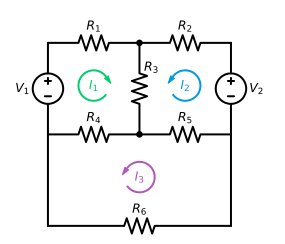
Example: Electric Circuits
- The circuit has three loops
- Loop 1
$R_1 I_1 + R_3 (I_1+I_2) + R_4 (I_1 + I_3) = V_1$ - Loop 2
$R_2 I_2 + R_3 (I_1+I_2) + R_5 (I_2 - I_3) = V_2$ - Loop 3
$R_5 (I_3-I_2) + R_4 (I_3 + I_1) + R_6 I_3 = 0$
- Loop 1
Example: Electric Circuits
- We obtain a linear system for unknown currents $I_1$, $I_2$, $I_3$ \[ \small\left[ \begin{array}{ccc} R_1 + R_3 + R_4 & R_3 & R_4 \\ R_3 & R_2 + R_3 + R_5 & -R_5\\ R_4 & -R_5 & R_4 + R_5 + R_6\\ \end{array} \right] \left[ \begin{array}{c} I_1 \\ I_2 \\ I_3 \\ \end{array} \right] = \left[ \begin{array}{c} V_1 \\ V_2 \\ 0\\ \end{array} \right] \]
- Note that the matrix is
- symmetric, i.e. $a_{ij}=a_{ji}$
- strictly diagonally dominant, i.e. $|a_{ii}|>\sum_{j\neq i} |a_{ij}|$
(assuming $R_k>0$)
- Circuit simulators solve large linear systems of this type
Example: Electric Circuits
- Another linear system corresponds to unknown resistances $R_i$, $i=1,\ldots,6$
\[ \small\left[ \begin{array}{ccc} \htmlClass{color1}{I_1} & \htmlClass{color1}{0} & I_1 + I_2 & I_1 & 0 & \htmlClass{color1}{0} \\ \htmlClass{color1}{0} & \htmlClass{color1}{I_2} & I_2 & 0 & -I_3 & \htmlClass{color1}{0} \\ \htmlClass{color1}{0} & \htmlClass{color1}{0} & 0 & I_1 + I_3 & -I_2 & \htmlClass{color1}{I_3} \\ \end{array} \right] \left[ \begin{array}{c} R_1 \\ R_2 \\ R_3 \\ R_4 \\ R_5 \\ R_6 \\ \end{array} \right] = \left[ \begin{array}{c} V_1 \\ V_2 \\ 0\\ \end{array} \right] \]
- Note that the matrix has full rank (assuming $I_k\neq 0$)
- The system is underdetermined: 3 equations for 6 unknowns
Example: Structural Analysis
- Common in structural analysis is to use
a linear relationship between force and displacement, Hooke’s law - Simplest case is the Hookean spring law
\[
F = k x
\]
- $k$: spring constant (stiffness)
- $F$: applied load
- $x$: spring extension (displacement)
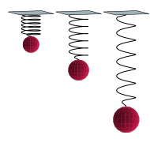
Example: Structural Analysis
- This relationship can be generalized to structural systems in 2D and 3D, which yields a linear system of the form
\[
Kx = F
\]
- $K \in \mathbb R^{n\times n}$: “stiffness matrix”
- $F \in \mathbb R^n$: “load vector”
- $x \in \mathbb R^n$: “displacement vector”
Example: Structural Analysis
- It is common engineering practice to use Hooke’s law
to simulate complex structures, which leads to large linear systems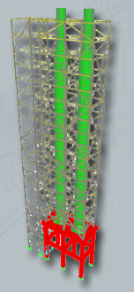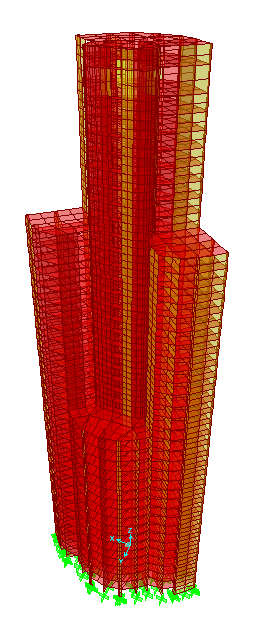
(from SAP2000, structural analysis software)

Example: Economics
- Leontief awarded Nobel Prize in Economics in 1973 for developing
a linear input/output model for production/consumption of goods - Consider an economy in which $n$ goods are produced and consumed
- $A \in \mathbb R^{n\times n}$: $a_{ij}$ represents
the amount of good $j$ required to produce a unit of good $i$ - $x \in \mathbb R^n$: $x_i$ is number of units of good $i$ produced
- $d \in \mathbb R^n$: $d_i$ is consumer demand for good $i$
- $A \in \mathbb R^{n\times n}$: $a_{ij}$ represents
- In general $a_{ii} = 0$, and $A$ may be sparse
Example: Economics
- The total amount of $x_i$ produced is given by the sum of
consumer demand $d_i$ and the amount of $x_i$ required to produce each $x_j$ \[ x_i = \underbrace{a_{i1} x_1 + a_{i2}x_2 + \cdots + a_{in} x_n}_\text{production of other goods} + d_i \] - Hence $x = Ax + d$ or, \[ \htmlClass{color2}{ ({\rm I} - A)x = d} \]
- Solve for $x$ to determine the required amount of production of each good
- If we consider many goods (e.g. an entire economy),
then we get a large linear system - Can be used to predict the effect of disruptions in the supply chain
Summary
- Matrix computations are very common
- Numerical Linear Algebra provides us with a toolbox
for performing these computations in an efficient and stable manner - In most cases, we can use these tools as a black box,
but it’s important to understand what they do- pick the right algorithm for a given situation
(e.g. exploit structure of a problem: symmetry, sparsity, etc) - understand how and when the algorithm fail
- pick the right algorithm for a given situation
Preliminaries
Preliminaries
- In this section we will focus on linear systems
\[
Ax = b
\]
with matrix $A \in \mathbb R^{n\times n}$, unknown vector $x \in \mathbb R^n$
and the right-hand side vector $b \in \mathbb R^n$ - Recall that it is often helpful to think of matrix multiplication
as a linear combination of the columns of $A$, where $x_j$ are the coefficients - That is, we have \[ Ax = \sum_{j=1}^n x_j a_{(:,j)} \] where $a_{(:,j)} \in \mathbb R^n$ is the $j$-th column of $A$ and $x_j$ are scalars
Preliminaries
- This can be displayed schematically as
\[ \begin{split} Ax = \left[ \begin{array}{c|c|c|c} &&&\\ &&&\\ a_{(:,1)} & a_{(:,2)} & \cdots & a_{(:,n)}\\ &&&\\ &&&\\ \end{array} \right] \left[ \begin{array}{c} x_1\\ x_2\\ \vdots\\ x_n\\ \end{array} \right] =\\ = \begin{array}{c} \\ \\ x_1\\ \\ \\ \end{array} \!\!\!\! \left[ \begin{array}{c} \\ \\ a_{(:,1)}\\ \\ \\ \end{array} \right] \begin{array}{c} \\ \\ + \cdots + ~~x_n\\ \\ \\ \end{array} \!\!\!\! \left[ \begin{array}{c} \\ \\ a_{(:,n)}\\ \\ \\ \end{array} \right]\end{split} \]
Preliminaries
- We therefore interpret $Ax = b$ as:
“$x$ is the vector of coordinates of $b$ in the basis of columns of $A$” - Often this is a more helpful point of view than conventional
interpretation of “dot-product of matrix row with vector” - Now we see that $Ax = b$ has a solution if \[ b \in \mathop{\mathrm{span}}\{ a_{(:,1)}, a_{(:,2)},\cdots, a_{(:,n)}\} \] (this holds even for a non-square $A$)
- Denote \[ {\mathop{\mathrm{image}}}(A) = \mathop{\mathrm{span}}\{ a_{(:,1)}, a_{(:,2)},\cdots, a_{(:,n)}\} \]
Preliminaries
Existence and Uniqueness
- If $b \in \mathop{\mathrm{image}}(A)$, then solution $x \in \mathbb R^n$ exists
- if solution $x$ exists and the columns $\{ a_{(:,1)}, a_{(:,2)},\cdots, a_{(:,n)}\}$ are linearly independent, then $x$ is unique
(if $x$ and $y$ are both solutions, then $A(x-y)=0$, therefore $x=y$) - if $x$ is a solution and $z \neq 0$ is such that $Az = 0$,
then also $A(x + \gamma z) = b$ for any $\gamma \in \mathbb R$,
so there are infinitely many solutions
- if solution $x$ exists and the columns $\{ a_{(:,1)}, a_{(:,2)},\cdots, a_{(:,n)}\}$ are linearly independent, then $x$ is unique
- If $b \not\in \mathop{\mathrm{image}}(A)$ then $Ax = b$ has no solution
Preliminaries
- The inverse map $A^{-1} \colon \mathbb R^n \to \mathbb R^n$ is well-defined
if and only if $Ax = b$ has unique solution for any $b\in \mathbb R^n$ - The inverse matrix $A^{-1} \in \mathbb R^{n\times n}$ such that $A A^{-1} = A^{-1}A = I$
exists if any of the following equivalent conditions are satisfied- det$(A) \neq 0$
- rank$(A) = n$
- $A z \neq 0$ for any $z \neq 0$ (null space of $A$ is $\{ 0 \}$)
- $A$ is nonsingular if $A^{-1}$ exists, and then $x = A^{-1} b \in \mathbb R^n$
- $A$ is singular if $A^{-1}$ does not exist
Norms
- A norm $\|\cdot\| : V \to \mathbb R$ is a function on a vector space $V$ that satisfies
- positive definiteness, $\|x\| \geq 0$ and $\|x\| = 0 \implies x = 0$
- absolute homogeneity, $\|\gamma x\| = |\gamma| \|x\|$, for $\gamma \in \mathbb R$
- triangle inequality, $\|x + y\| \leq \|x\| + \|y\|$
Norms
- The triangle inequality implies another helpful inequality:
the “reverse triangle inequality” \[ \big| \|x\| - \|y\| \big| \leq \|x - y\| \] - Proof:
\[
\|x\| = \|(x - y) + y\| \leq \|x-y\|+\|y\| \implies \|x\| - \|y\| \leq \|x-y\|
\]
\[ \|y\| = \|(y - x) + x\| \leq \|y-x\|+\|x\| \implies \|y\| - \|x\| \leq \|x-y\| \]
- Therefore $\big| \|x\| - \|y\| \big| \leq \|x - y\|$
Vector Norms
- Let’s now introduce some common norms on $\mathbb R^n$
- Most common norm is the Euclidean norm (or $2$-norm): \[ \textstyle \|x\|_2 = \sqrt{\sum_{j=1}^n x_j^2} \]
- $2$-norm is special case of the $p$-norm for any $p \geq 1$: \[ \textstyle \|x\|_p = \left(\sum_{j=1}^n |x_j|^p\right)^{1/p} \]
- Condition $p\geq 1$ is required for the triangle inequality
- Norm $\|x\|_p$ approaches $\|x\|_\infty$ as $p\to\infty$ \[ \|x\|_{\infty} = \max_{1 \leq i \leq n} |x_i| \]
Example: Limit of $p$-norm
- See [examples/unit2/norm_inf.py]
- For vector $x=(1.2, 0.5, -0.1, 2.3, -1.05, -2.35)^T \in \mathbb{R}^6$
- $\|x\|_\infty=2.35$ (component of $x$ with the largest magnitude)
- Norm $\|x\|_p$ approaches $\|x\|_\infty$ as $p\to\infty$
- Bounds: $\|x\|_\infty \leq \|x\|_p \leq n^{1/p} \|x\|_\infty$
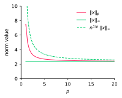
Vector Norms
- We generally use whichever norm is most convenient/appropriate for a given problem, e.g. $2$-norm for least-squares analysis
- Different norms give different (but related) measures of size
- An important fact is:
All norms on a finite dimensional space (such as $\mathbb R^n$) are equivalent
Vector Norms
- That is, let $\|\cdot\|_a$ and $\|\cdot\|_b$ be two norms on a finite dimensional space $V$, then $\exists\; c_1, c_2 > 0$ such that for any $x \in V$ \[ c_1 \|x\|_a \leq \|x\|_b \leq c_2 \|x\|_a \]
- Also, from above we have $\frac{1}{c_2}\|x\|_b \leq \|x\|_a \leq \frac{1}{c_1}\|x\|_b$
- Hence if we can derive an inequality in one norm on $V$,
it applies (after appropriate scaling) in any other norm as well
Vector Norms
- Norm $\|x\|_2$ bounds norm $\|x\|_1$ \[ \|x\|_2 \leq \|x\|_1 \leq \sqrt{n}\|x\|_2 \]
- Proof of $\|x\|_2 \leq \|x\|_1$
\[ \begin{split} \textstyle \|x\|_1^2 = \big(\sum_{i=1}^n|x_i|\big)^2 = \big(\sum_{i=1}^n |x_i|\big) \big(\sum_{j=1}^n |x_j|\big)=\\ \textstyle =\sum_{i=1}^n \sum_{j=1}^n |x_i|\,|x_j|\geq \sum_{i=1}^n |x_i|\,|x_i|=\sum_{i=1}^n |x_i|^2 =\|x\|_2^2 \end{split} \]
- Proof of $\|x\|_1 \leq \sqrt{n}\|x\|_2$. The Cauchy-Schwarz inequality
\[ \textstyle \sum_{i=1}^n a_i b_i \leq \big(\sum_{i=1}^n a_i^2\big)^{1/2}\big(\sum_{i=1}^n b_i^2\big)^{1/2} \] with $a_i=1$ and $b_i=|x_i|$ gives\[ \|x\|_1 = \sum_{i=1}^n 1 \;|x_i| \leq \big(\sum_{i=1}^n 1^2\big)^{1/2} \big( \sum_{i=1} |x_i|^2 \big)^{1/2} = \sqrt{n}\, \|x\|_2 \]
Vector Norms
- Each norm produces a different unit circle
\[
\{x\in\mathbb{R}^2 : \|x\|_p=1\}
\]
$\|x\|_1$$\|x\|_2$$\|x\|_4$$\|x\|_\infty$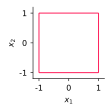
- Norm $\|x\|_p$ approaches $\|x\|_\infty$ as $p\to\infty$
- Commonly used norms are $\|x\|_1$, $\|x\|_2$, and $\|x\|_\infty$
Matrix Norms
- There are many ways to define norms on matrices
- For example, the Frobenius norm is defined as \[ \|A\|_F = \Big(\sum_{i=1}^n\sum_{j=1}^n |a_{ij}|^2 \Big)^{1/2} \]
- If we think of $A$ as a vector in $\mathbb R^{n^2}$,
then Frobenius is equivalent to the vector $2$-norm of $A$
Matrix Norms
- Matrix norms induced by vector norms are most useful
- Here, matrix $p$-norm is induced by vector $p$-norm \[ \|A\|_p = \max_{x \neq 0} \frac{\|Ax\|_p}{\|x\|_p} = \max_{\|x\|_p=1} \|Ax\|_p \]
- This definition implies the useful property
\[ \|Ax\|_p \leq \|A\|_p \|x\|_p \] since \[ \htmlClass{color2}{ \|Ax\|_p} = \frac{\|Ax\|_p}{\|x\|_p} \|x\|_p \leq \left(\max_{v\neq 0} \frac{\|Av\|_p}{\|v\|_p}\right) \|x\|_p = \htmlClass{color2}{ \|A\|_p \|x\|_p} \]
Matrix Norms
- The $1$-norm and $\infty$-norm can be calculated straightforwardly:
\[ \begin{aligned} \|A\|_1 &= \max_{1 \leq j \leq n} \|a_{(:,j)}\|_1 &\text{~(max column sum)} \\ \|A\|_\infty &= \max_{1 \leq i\leq n} \|a_{(i,:)}\|_1 &\text{~(max row sum)} \end{aligned} \]
- Later we will see how to compute the $2$-norm of a matrix
Example: Matrix Norm Using Monte Carlo
- How to compute the matrix norm induced by a “black box” vector norm?
- One approach is the Monte-Carlo method
that solves problems using repeated random sampling - Recall the definition of a matrix norm induced by vector norm \[ \|A\| = \max_{x \neq 0} \frac{\|Ax\|}{\|x\|} \]
- See [examples/unit2/norm_monte_carlo.py]
- Warning: Common norms can be computed with more efficient methods!
Condition Number
- Recall from Unit 0 that the condition number of $A \in \mathbb R^{n\times n}$ is defined as \[ \htmlClass{color2}{ \kappa(A) = \|A\| \, \|A^{-1}\|} \]
- The value of $\kappa(A)$ depends on which norm we use
numpy.linalg.condcomputes the condition number for various norms- If $A$ is a singular square matrix, then by convention $\kappa(A) = \infty$
Residual
- Recall that the residual $r(x) = b - A x$
was crucial in least-squares problems - It is also crucial in assessing the accuracy
of a proposed solution ($\hat x$) to a linear system $Ax = b$ - Key point: The residual $r(\hat x)$ is straightforward to compute,
while the error $\Delta x = x - \hat x$ is not (without knowing the exact solution)
Residual
- We have that $\|\Delta x\| = \|x - \hat x\| = 0$ if and only if $\|r(\hat x)\| = 0$
- However, small residual doesn’t necessarily imply small $\|\Delta x\|$
- Observe that \[ \|\Delta x\| = \|x - \hat x\| = \| A^{-1}(b - A\hat x) \| = \| A^{-1} r(\hat x)\|\leq \|A^{-1}\|\|r(\hat x)\| \] Hence \[ \htmlClass{color2}{ \frac{\|\Delta x\|}{\|\hat x\|}} \leq \frac{\|A^{-1}\|\|r(\hat x)\|}{\|\hat x\|} = \frac{\|A\|\|A^{-1}\|\|r(\hat x)\|}{\|A\|\|\hat x\|} = \htmlClass{color2}{ \kappa(A)\frac{\|r(\hat x)\|}{\|A\|\|\hat x\|}} \quad (*) \]
Residual
- Define the relative residual as \[ \frac{\|r(\hat x)\|}{\|A\|\|\hat x\|} \]
- Then our inequality $(*)$ states that
“relative error is bounded by condition number times the relative residual” - This is just like our condition number relationship from Unit 0: \[ \kappa(A) \geq \frac{\|\Delta x\|/\|x\|}{\|\Delta b\|/\|b\|}, \qquad \text{i.e.} \qquad \frac{\|\Delta x\|}{\|x\|} \leq \kappa(A) \frac{\|\Delta b\|}{\|b\|} \quad (**) \]
- The reason $(*)$ and $(**)$ are related is that
the residual measures the input pertubation ($\Delta b$) in $Ax = b$ - To see this, let’s consider $Ax = b$ to be a map $b \in \mathbb R^n \to x \in \mathbb R^n$
Residual
- Then we can consider $\hat x$ to be the exact solution
for some perturbed input $\hat b = b + \Delta b$ \[ A\hat x = \hat b \] - The residual associated with $\hat x$ is \[ r(\hat x) = b - A\hat x = b - \hat b = -\Delta b \] i.e. $\|r(\hat x)\| = \|\Delta b\|$
- In general, a (backward) stable algorithm gives us
the exact solution to a slightly perturbed problem, i.e. a small residual - This is a reasonable expectation for a stable algorithm:
rounding error doesn’t accumulate, so effective input perturbation is small
Example: Residual vs. Error
- From Heath’s book (Example 2.8)
- Consider a $2\times 2$ example to clearly demonstrate
the difference between residual and error\[ Ax = \left[ \begin{array}{cc} 0.913 & 0.659\\ 0.457 & 0.330 \end{array} \right] \left[ \begin{array}{cc} x_1\\ x_2 \end{array} \right] = \left[ \begin{array}{cc} 0.254\\ 0.127 \end{array} \right] = b \]
- The exact solution is given by $x = [1, -1]^T$
- Suppose we compute two different approximate solutions \[ \hat x^{(1)} = \left[ \begin{array}{c} -0.0827\\ 0.5 \end{array} \right], \qquad \hat x^{(2)} = \left[ \begin{array}{c} 0.999\\ -1.001 \end{array} \right] \]
Example: Residual vs. Error
- Then, \[ \|r(\hat x^{(1)})\|_1 = 2.1\times 10^{-4}, \qquad \|r(\hat x^{(2)})\|_1 = 2.4\times 10^{-2} \]
- but \[ \|x-\hat x^{(1)}\|_1 = 2.58, \qquad \|x - \hat x^{(2)}\|_1 = 0.002 \]
- In this case, $\hat x^{(2)}$ is better solution, but has larger residual!
- This is possible here because $\kappa(A) = 1.25\times 10^4$ is quite large
($\text{relative error} \leq 1.25\times 10^4\times\text{relative residual}$)
Solving $Ax = b$
Solving $Ax = b$
- Familiar idea for solving $Ax = b$ is to use Gaussian elimination
to transform $Ax=b$ to a triangular system - What is a triangular system?
- upper triangular $U \in \mathbb R^{n\times n}$
$u_{ij} = 0$ for $i > j$
$U=\left[ \begin{array}{cc} u_{11} & u_{12} & u_{13} \\ 0 & u_{22} & u_{23} \\ 0 & 0 & u_{33} \\ \end{array} \right]$
- lower triangular $L \in \mathbb R^{n\times n}$
$\ell_{ij} = 0$ for $i < j$
$L=\left[ \begin{array}{cc} l_{11} & 0 & 0 \\ l_{21} & l_{22} & 0 \\ l_{31} & l_{32} & l_{33} \\ \end{array} \right]$
- upper triangular $U \in \mathbb R^{n\times n}$
- Question: Why triangular?
- Answer: Because triangular systems are easy to solve!
Solving $Ax = b$
- For an upper-triangular system $U x = b$,
we can use backward substitution$x_n = b_n / u_{nn}$
$x_{n-1} = (b_{n-1} - u_{n-1,n}x_n ) / u_{n-1,n-1}$
$\ldots$
$x_j = \left( b_j - \sum_{k=j+1}^n u_{jk}x_k \right) / u_{jj}$
Solving $Ax = b$
- For a lower triangular system $L x = b$,
we can use forward substitution$x_1 = b_1 / \ell_{11}$
$x_{2} = (b_{2} - \ell_{21}x_1 ) / \ell_{22}$
$\ldots$
$x_j =\textstyle \left( b_j - \sum_{k=1}^{j-1} \ell_{jk}x_k \right) / \ell_{jj}$
Asymptotic Notation
- To simplify the cost estimation for an algorithm, we analyze its
asymptotic behavior as the size of the problem increases ($n\to\infty$) - Notation $f(n) \sim g(n)$ refers to asymptotic equivalence \[ \lim_{n\to \infty}\frac{f(n)}{g(n)} = 1 \]
- Notation $f(n) = \mathcal{O}(g(n))$ refers to an asymptotic upper bound \[ |f(n)| \leq M |g(n)| \] for all $n \geq N$, where $M>0$ and $N > 0$
- If $f(n) \sim g(n)$, then $f(n) = \mathcal{O}(g(n))$. The opposite is not true!
- We prefer “$\sim$” since it indicates the scaling factor of the leading term
- For example, if $f(n) = n^2/4 + n$, then $f(n) = \mathcal{O}(n^2)$, whereas $f(n) \sim n^2/4$
Solving $Ax = b$
- Backward (and forward) substitution
can be implemented with a double nested loop - It requires just one pass through the matrix!
- The computational work is dominated by evaluating the sum \[ \sum_{k=1}^{j-1} \ell_{jk}x_k \quad j=1,\ldots,n \] which takes $j-1$ additions and multiplications for each $j$
- So the total number of floating point operations is asymptotically \[ 2\sum_{j=1}^n j = \frac{2n(n+1)}{2} \sim n^2 \]
Solving $Ax = b$
- How can we transform $Ax = b$ to a triangular system?
- Observation: If we multiply $Ax = b$ by a nonsingular matrix $M$,
then the new system $MAx = Mb$ has the same solution - We can devise a sequence of matrices \[ M_{1}, M_2, \ldots, M_{n-1} \] such that $M = M_{n-1}\dots M_1$ and $U=MA$ is upper triangular
- Gaussian elimination provides such a sequence
and gives the transformed system $Ux = M b$
LU Factorization
- We will show shortly that if $MA = U$,
then $L = M^{-1}$ is lower triangular - Therefore, we obtain that the matrix factorizes into \[ \htmlClass{color2}{ A = M^{-1}U=LU} \] a product of lower ($L$) and upper ($U$) triangular matrices
- This is the LU factorization of $A$
LU Factorization
- LU factorization is a common way of solving linear systems!
- Once a factorization $A=LU$ is known, the system
\[
LUx = b
\]
is solved in two steps
- lower triangular: $Ly=b$
- upper triangular: $Ux=y$
LU Factorization
- Next question: How can we find $M_{1}, M_2, \cdots, M_{n-1}$?
- We need to be able to annihilate selected entries of $A$
below the diagonal in order to obtain an upper-triangular matrix - To do this, we use elementary elimination matrices
- Let $L_j$ denote $j$-th elimination matrix
- From now on, we denote them $L_j$ rather than $M_j$
since elimination matrices are lower triangular
LU Factorization
- Here we describe how to proceed from step $j-1$ to step $j$
- Let $X=L_{j-1}L_{j-2}\cdots L_1 A$ denote the matrix at the start of step $j$,
and $x_{(:,k)} \in \mathbb R^n$ denote column $k$ of $X$\[ X = \left[ \begin{array}{ccccccc} \htmlClass{color1} {x_{11} } & \htmlClass{color1} \cdots & \htmlClass{color1}{x_{1,j-1}} & \htmlClass{color0}{x_{1j} } & x_{1,j+1} & \cdots & x_{1n} \\ \htmlClass{color1} {\vdots } & \htmlClass{color1} \ddots & \htmlClass{color1}{\vdots } & \htmlClass{color0}{\vdots } & \vdots & \ddots & \vdots \\ \htmlClass{color1} {0 } & \htmlClass{color1} \cdots & \htmlClass{color1}{x_{j-1,j-1}} & \htmlClass{color0}{x_{j-1,j}} & x_{j-1,j+1} & \cdots & x_{j-1,n} \\ \htmlClass{color1} {0 } & \htmlClass{color1} \cdots & \htmlClass{color1}{0 } & \htmlClass{color0}{x_{jj} } & x_{j,j+1} & \cdots & x_{jn} \\ \htmlClass{color1} {0 } & \htmlClass{color1} \cdots & \htmlClass{color1}{0 } & \htmlClass{color0}{x_{j+1,j}} & x_{j+1,j+1} & \cdots & x_{j+1,n} \\ \htmlClass{color1} {\vdots } & \htmlClass{color1} \ddots & \htmlClass{color1}{\vdots } & \htmlClass{color0}{\vdots } & \vdots & \ddots & \vdots \\ \htmlClass{color1} {0 } & \htmlClass{color1} \cdots & \htmlClass{color1}{0 } & \htmlClass{color0}{x_{nj} } & x_{n,j+1} & \cdots & x_{nn} \end{array} \right] \]
LU Factorization
- We are looking for a matrix $L_j$ such that multiplication $L_j X$
- eliminates elements below the diagonal in $x_{(:,j)}$
- does not modify columns $x_{(:,k)}$ for $k=1,\ldots,j-1$
- Let’s define $L_j$ such that \[ L_j x_{(:,j)} = \left[ \begin{array}{cccccc} 1 & \cdots & 0 & 0 & \cdots & 0\\ \vdots & \ddots & \vdots & \vdots & \ddots & \vdots\\ 0 & \cdots & 1 & 0 & \cdots & 0\\ 0 & \cdots & -x_{j+1,j}/x_{jj} & 1 & \cdots & 0\\ \vdots & \ddots & \vdots & \vdots & \ddots & \vdots\\ 0 & \cdots & -x_{nj}/x_{jj} & 0 & \cdots & 1 \end{array} \right] \left[ \htmlClass{color0}{ \begin{array}{c} x_{1j}\\ \vdots\\ x_{jj}\\ x_{j+1,j}\\ \vdots\\ x_{nj} \end{array} } \right] = \left[ \begin{array}{c} x_{1j}\\ \vdots\\ x_{jj}\\ 0\\ \vdots\\ 0 \end{array} \right] \]
LU Factorization
- For brevity, we denote $\ell_{ij} = x_{ij}/x_{jj}$ and define
\[ L_j = \left[ \begin{array}{cccccc} 1 & \cdots & 0 & 0 & \cdots & 0\\ \vdots & \ddots & \vdots & \vdots & \ddots & \vdots\\ 0 & \cdots & 1 & 0 & \cdots & 0\\ 0 & \cdots & -\ell_{j+1,j} & 1 & \cdots & 0\\ \vdots & \ddots & \vdots & \vdots & \ddots & \vdots\\ 0 & \cdots & -\ell_{nj} & 0 & \cdots & 1 \end{array} \right] \]
LU Factorization
- Using elementary elimination matrices,
we can reduce $A$ to an upper triangular form, one column at a time - Schematically, for a $4\times 4$ matrix, we have \[ \begin{array}{ccccc} \left[ \begin{array}{cccc} * & * & * & *\\ * & * & * & *\\ * & * & * & *\\ * & * & * & * \end{array} \right] & \xrightarrow{L_1} & \left[ \begin{array}{cccc} * & * & * & *\\ 0 & * & * & *\\ 0 & * & * & *\\ 0 & * & * & * \end{array} \right] & \xrightarrow{L_2} & \left[ \begin{array}{cccc} * & * & * & *\\ 0 & * & * & *\\ 0 & 0 & * & *\\ 0 & 0 & * & * \end{array} \right]\\ \\ A & & L_1 A & & L_2L_1 A \end{array} \]
- Key point: $L_j$ does not modify columns $1,\ldots,j-1$ of $L_{j-1}L_{j-2}\cdots L_1 A$
LU Factorization
- After $n-1$ steps, we obtain an upper triangular matrix
\[ U = L_{n-1} \cdots L_2 L_1 A = \left[ \begin{array}{cccc} * & * & * & *\\ 0 & * & * & *\\ 0 & 0 & * & *\\ 0 & 0 & 0 & * \end{array} \right] \]
LU Factorization
- We have $L_{n-1} \cdots L_2 L_1 A = U$
- To form a factorization $A = LU$,
we need $L = (L_{n-1} \cdots L_2 L_1)^{-1} = L_1^{-1}L_2^{-1}\cdots L_{n-1}^{-1}$ - First observation:
$L_j^{-1}$ is obtained by negating the subdiagonal elements of $L_j$\[ L_j = \left[ \begin{array}{cccccc} 1 & \cdots & 0 & 0 & \cdots & 0\\ \vdots & \ddots & \vdots & \vdots & \ddots & \vdots\\ 0 & \cdots & 1 & 0 & \cdots & 0\\ 0 & \cdots & -\ell_{j+1,j} & 1 & \cdots & 0\\ \vdots & \ddots & \vdots & \vdots & \ddots & \vdots\\ 0 & \cdots & -\ell_{nj} & 0 & \cdots & 1 \end{array} \right] \quad L_j^{-1} = \left[ \begin{array}{cccccc} 1 & \cdots & 0 & 0 & \cdots & 0\\ \vdots & \ddots & \vdots & \vdots & \ddots & \vdots\\ 0 & \cdots & 1 & 0 & \cdots & 0\\ 0 & \cdots & \ell_{j+1,j} & 1 & \cdots & 0\\ \vdots & \ddots & \vdots & \vdots & \ddots & \vdots\\ 0 & \cdots & \ell_{nj} & 0 & \cdots & 1 \end{array} \right] \]
LU Factorization
- $L_j L_j^{-1} = I$ can be verified directly by multiplication
- Intuitive explanation
- multiplication $L_j v$ subtracts
a scaled component $v_j$\[ L_j \left[ \begin{array}{c} v_{1}\\ \vdots\\ v_{j}\\ v_{j+1}\\ \vdots\\ v_{n} \end{array} \right] = \left[ \begin{array}{c} v_{1}\\ \vdots\\ v_{j}\\ v_{j+1} - \ell_{j+1,j}v_j\\ \vdots\\ v_{n} - \ell_{nj}v_j \end{array} \right] \]
- so the inverse should add it back ($v_j$ itself is unchanged)
\[ L_j^{-1} \left[ \begin{array}{c} v_{1}\\ \vdots\\ v_{j}\\ v_{j+1}\\ \vdots\\ v_{n} \end{array} \right] = \left[ \begin{array}{c} v_{1}\\ \vdots\\ v_{j}\\ v_{j+1} + \ell_{j+1,j}v_j\\ \vdots\\ v_{n} + \ell_{nj}v_j \end{array} \right] \]
- multiplication $L_j v$ subtracts
LU Factorization
- Second observation: consider $L_{j-1}^{-1} L_j^{-1}$
\[ \underbrace{ \left[ \begin{array}{ccccccc} \htmlClass{color5} 1 & \cdots & 0 & 0 & 0 & \cdots & 0\\ \vdots & \htmlClass{color5}\ddots & \vdots & \vdots & \vdots & \ddots & \vdots\\ 0 & \cdots & \htmlClass{color5}1 & 0 & 0 & \cdots & 0\\ 0 & \cdots & \ell_{j,j-1} & \htmlClass{color5}1 & 0 & \cdots & 0\\ 0 & \cdots & \ell_{j+1,j-1} & 0 & \htmlClass{color5}1 & \cdots & 0\\ \vdots & \ddots & \vdots & \vdots & \vdots & \htmlClass{color5}\ddots & \vdots\\ 0 & \cdots & \ell_{n,j-1} & 0 & 0 & \cdots & \htmlClass{color5}1 \end{array} \right] }_{\Large L_{j-1}^{-1}} \; \underbrace{ \left[ \begin{array}{ccccccc} \htmlClass{color5}1 & \cdots & 0 & 0 & 0 & \cdots & 0\\ \vdots & \htmlClass{color5}\ddots & \vdots & \vdots & \vdots & \ddots & \vdots\\ 0 & \cdots & \htmlClass{color5}1 & 0 & 0 & \cdots & 0\\ 0 & \cdots & 0 & \htmlClass{color5}1 & 0 & \cdots & 0\\ 0 & \cdots & 0 & \ell_{j+1,j} & \htmlClass{color5}1 & \cdots & 0\\ \vdots & \ddots & \vdots & \vdots & \vdots & \htmlClass{color5}\ddots & \vdots\\ 0 & \cdots & 0 & \ell_{nj} & 0 & \cdots & \htmlClass{color5}1 \end{array} \right] }_{\Large L_{j}^{-1}} = \left[ \begin{array}{ccccccc} \htmlClass{color5}1 & \cdots & 0 & 0 & 0 & \cdots & 0\\ \vdots & \htmlClass{color5}\ddots & \vdots & \vdots & \vdots & \ddots & \vdots\\ 0 & \cdots & \htmlClass{color5}1 & 0 & 0 & \cdots & 0\\ 0 & \cdots & \ell_{j,j-1} & \htmlClass{color5}1 & 0 & \cdots & 0\\ 0 & \cdots & \ell_{j+1,j-1} & \ell_{j+1,j} & \htmlClass{color5}1 & \cdots & 0\\ \vdots & \ddots & \vdots & \vdots & \vdots & \htmlClass{color5}\ddots & \vdots\\ 0 & \cdots & \ell_{n,j-1} & \ell_{nj} & 0 & \cdots & \htmlClass{color5}1 \end{array} \right] \]
LU Factorization
- Therefore, by generalizing to all $n-1$ matrices \[ L = L_{1}^{-1} L_2^{-1} \cdots L_{n-1}^{-1} = \left[ \begin{array}{ccccc} 1 \\ \ell_{21} & 1 \\ \ell_{31} & \ell_{32} & 1 \\ \vdots & \vdots & \ddots & \ddots\\ \ell_{n1} & \ell_{n2} &\cdots &\ell_{n,n-1} & 1 \end{array} \right] \]
- So we simply collect the subdiagonal terms
from all steps of factorization
LU Factorization
- Therefore, basic LU factorization algorithm is
1:$\hspace{0em}$$U=A$, $L={\rm I}$
2:$\hspace{0em}$for $j = 1:n-1$ do
3:$\hspace{1.2em}$for $i=j+1:n$ do
4:$\hspace{2.4em}$$\ell_{ij} = u_{ij}/u_{jj}$
5:$\hspace{2.4em}$for $k=j:n$ do
6:$\hspace{3.6em}$$u_{ik} = u_{ik} - \ell_{ij}u_{jk}$
7:$\hspace{2.4em}$end for
8:$\hspace{1.2em}$end for
9:$\hspace{0em}$end for - Note that the entries of $U$ are updated each iteration
so at the start of step $j$, $U = L_{j-1}L_{j-2}\cdots L_1 A$ - Here line 4 comes straight from the definition $\ell_{ij} = \frac{u_{ij}}{u_{jj}}$
LU Factorization
- Line 6 accounts for the effect of $L_j$ on columns $k = j, \ldots, n$ of $U$
- For $k=j:n$ we have
\[ L_j u_{(:,k)} = \left[ \begin{array}{cccccc} 1 & \cdots & 0 & 0 & \cdots & 0\\ \vdots & \ddots & \vdots & \vdots & \ddots & \vdots\\ 0 & \cdots & 1 & 0 & \cdots & 0\\ 0 & \cdots & -\ell_{j+1,j} & 1 & \cdots & 0\\ \vdots & \ddots & \vdots & \vdots & \ddots & \vdots\\ 0 & \cdots & -\ell_{nj} & 0 & \cdots & 1 \end{array} \right] \left[ \begin{array}{c} u_{1k}\\ \vdots\\ u_{jk}\\ u_{j+1,k}\\ \vdots\\ u_{nk} \end{array} \right] = \left[ \begin{array}{c} u_{1k}\\ \vdots\\ u_{jk}\\ u_{j+1,k} - \ell_{j+1,j}u_{jk}\\ \vdots\\ u_{nk} - \ell_{nj}u_{jk} \end{array} \right] \]
- The right hand side is the updated $k$-th column of $U$,
which is computed in line 6
LU Factorization
- LU factorization involves a triple nested loop, hence $\mathcal{O}(n^3)$ operations
- Careful operation counting shows LU factorization requires
- $\sim \frac{1}{3}n^3$ additions
- $\sim \frac{1}{3}n^3$ multiplications
- Therefore $\sim \frac{2}{3}n^3$ operations in total
Solving Linear Systems Using LU
- To solve $Ax = b$, we perform the following three steps:
- Step 1: Factorize $A$ into $A=LU$: $\sim \frac{2}{3}n^3$
- Step 2: Solve $Ly = b$ by forward substitution: $\sim n^2$
- Step 3: Solve $Ux = y$ by backward substitution: $\sim n^2$
- The total work, dominated by Step 1, is $\sim \frac{2}{3}n^3$
Solving Linear Systems Using LU
- An alternative approach would be to first compute $A^{-1}$
and evaluate $x = A^{-1}b$, but this is a bad idea! - Question: How would we compute $A^{-1}$?
Solving Linear Systems Using LU
- Answer: Let $a^\text{inv}_{(:,k)}$ denote the $k$-th column of $A^{-1}$, then $a^\text{inv}_{(:,k)}$ must satisfy \[ A a^\text{inv}_{(:,k)} = e_k \] where $e_k$ is the $k$-th basis vector
- Therefore, inverting matrix $A$ reduces to solving $Ax=b$ for $n$ various $b$
- We first factorize $A=LU$, then forward/backward substitute for \[ LU a^\text{inv}_{(:,k)}=e_k, \quad k = 1, \ldots, n \]
Solving Linear Systems Using LU
- Solving linear systems using $A^{-1}$ is inefficient!
- one pair of substitutions requires $\sim 2n^2$ operations
- $n$ pairs of substitutions require $\sim 2n^3$ operations
- evaluating $A^{-1}b$ takes $\sim 2n^2$ operations
(as many as one pair of substitutions)
- A rule of thumb in Numerical Linear Algebra:
It is rarely a good idea to compute $A^{-1}$ explicitly
Solving Linear Systems Using LU
- Another case where LU factorization is very helpful
is if we want to solve $Ax = b_i$ for several different
right-hand sides $b_i$, $i = 1,\ldots,k$ - We incur the $\sim \frac{2}{3}n^3$ cost only once,
and then each subsequent pair of forward/backward
substitutions costs only $\sim 2n^2$ - Makes a huge difference if $n$ is large!
Stability of Gaussian Elimination
- There is a problem with the LU algorithm presented above
- Consider the matrix \[ A = \left[ \begin{array}{cc} 0 & 1\\ 1 & 1 \end{array} \right] \]
- $A$ is nonsingular, well-conditioned ($\kappa(A) \approx 2.62$)
but LU factorization fails at first step (division by zero)
Stability of Gaussian Elimination
- LU factorization doesn’t fail for \[ A = \left[ \begin{array}{cc} 10^{-20} & 1\\ 1 & 1 \end{array} \right] \] but we get \[ L = \left[ \begin{array}{cc} 1 & 0\\ 10^{20} & 1 \end{array} \right] , \qquad U = \left[ \begin{array}{cc} 10^{-20} & 1\\ 0 & 1-10^{20} \end{array} \right] \]
Stability of Gaussian Elimination
- Let’s suppose that $-10^{20} \in \mathbb F$ (a floating point number)
and that $\mathop{\mathrm{round}}(1-10^{20}) = -10^{20}$ - Then in finite precision arithmetic we get \[ \widetilde L = \left[ \begin{array}{cc} 1 & 0\\ 10^{20} & 1 \end{array} \right] , \qquad \widetilde U = \left[ \begin{array}{cc} 10^{-20} & 1\\ 0 & -10^{20} \end{array} \right] \]
Stability of Gaussian Elimination
- Hence due to rounding error we obtain \[ \widetilde L \widetilde U = \left[ \begin{array}{cc} 10^{-20} & 1\\ 1 &\htmlClass{color0}{ 0} \end{array} \right] \] which is not close to \[ A = \left[ \begin{array}{cc} 10^{-20} & 1\\ 1 & 1 \end{array} \right] \]
- Then, for example, let $b = [3,3]^T$
- using $\widetilde L \widetilde U$, we get $\tilde x = [3,3]^T$
- true answer is $x = [0,3]^T$
- The relative error is large
even though the problem is well-conditioned
Stability of Gaussian Elimination
- In this example, standard Gaussian elimination yields a large residual
- Or equivalently, it yields the exact solution to a problem
corresponding to a large input perturbation: $\Delta b = [0,3]^T$ - So the algorithm is unstable!
- In this case the cause of the large error in $x$
is numerical instability, not ill-conditioning - To stabilize Gaussian elimination, we need to permute rows,
i.e. perform pivoting
Pivoting
- Recall the Gaussian elimination process \[ \left[ \begin{array}{cccc} * & * & * & *\\ \; & x_{jj} & * & *\\ \; & * & * & *\\ \; & * & * & * \end{array} \right] \longrightarrow \left[ \begin{array}{cccc} * & * & * & *\\ \; & x_{jj} & * & *\\ \; & 0 & * & *\\ \; & 0 & * & * \end{array} \right] \]
- But we could just as easily do \[ \left[ \begin{array}{cccc} * & * & * & *\\ \; & * & * & *\\ \; & x_{ij} & * & *\\ \; & * & * & * \end{array} \right] \longrightarrow \left[ \begin{array}{cccc} * & * & * & *\\ \; & 0 & * & *\\ \; & x_{ij} & * & *\\ \; & 0 & * & * \end{array} \right] \]
Partial Pivoting
- The entry $x_{ij}$ is called the pivot, and flexibility
in choosing the pivot is essential otherwise we can’t deal with: \[ A = \left[ \begin{array}{cc} 0 & 1\\ 1 & 1 \end{array} \right] \] - Choosing the pivot as the largest element in column $j$
improves numerical stability. This is called partial pivoting - Full pivoting additionally permutes the columns and looks for the largest
over $\mathcal{O}(n^2)$ elements, which is costly and only marginally beneficial for stability - This ensures that each $\ell_{ij}$ entry — which acts as a multiplier in the LU factorization process — satisfies $|\ell_{ij}| \leq 1$
Partial Pivoting
- To maintain the triangular LU structure,
we permute rows by premultiplying by permutation matrices\[ \begin{array}{ccccc} \left[ \begin{array}{cccc} * & * & * & *\\ & * & * & *\\ & * & * & *\\ & \htmlClass{color2}{ x_{ij}} & \htmlClass{color2}{ *} & \htmlClass{color2}{ *} \end{array} \right] & \xrightarrow{P_1} & \left[ \begin{array}{cccc} * & * & * & *\\ & \htmlClass{color2}{ x_{ij}} & \htmlClass{color2}{ *} & \htmlClass{color2}{ *}\\ & * & * & *\\ & \htmlClass{color2}{ *} & \htmlClass{color2}{ *} & \htmlClass{color2}{ *} \end{array} \right] & \xrightarrow{L_1} & \left[ \begin{array}{cccc} * & * & * & *\\ & x_{ij} & * & *\\ & 0 & * & *\\ & 0 & * & * \end{array} \right]\\ {\rm pivot~selection} & & {\rm row~swap} \end{array}\hspace{-2em} \]
- In this case \[ P_1 = \left[ \begin{array}{cccc} 1 & 0 & 0 & 0\\ 0 & 0 & 0 & 1\\ 0 & 0 & 1 & 0\\ 0 & 1 & 0 & 0 \end{array} \right] \] and each $P_j$ is obtained by swapping two rows of ${\rm I}$
Partial Pivoting
- Therefore, with partial pivoting we obtain \[ L_{n-1}P_{n-1} \cdots L_2 P_2 L_1 P_1 A = U \]
- It can be shown (we omit the details here, see Trefethen & Bau)
that this can be rewritten as \[ \htmlClass{color2}{ P A = L U} \] where $P = P_{n-1} \cdots P_2 P_1$. Note that $L$ is not the same as without pivoting - Theorem: Gaussian elimination with partial pivoting produces
nonsingular factors $L$ and $U$ if and only if $A$ is nonsingular
Partial Pivoting
- Pseudocode for LU factorization with partial pivoting
(new code is highlighted):1:$\hspace{0em}$$U=A$, $L={\rm I}$, $P={\rm I}$
2:$\hspace{0em}$for $j = 1:n-1$ do3:$\hspace{1.2em}$Select $i (\geq j)$ that maximizes $|u_{ij}|$
4:$\hspace{1.2em}$Swap rows of $U$: $u_{(j,j:n)} \leftrightarrow u_{(i,j:n)}$
5:$\hspace{1.2em}$Swap rows of $L$: $\ell_{(j,1:j-1)} \leftrightarrow \ell_{(i,1:j-1)}$
6:$\hspace{1.2em}$Swap rows of $P$: $p_{(j,:)} \leftrightarrow p_{(i,:)}$7:$\hspace{1.2em}$for $i=j+1:n$ do
8:$\hspace{2.4em}$$\ell_{ij} = u_{ij}/u_{jj}$
9:$\hspace{2.4em}$for $k=j:n$ do
10:$\hspace{3.6em}$$u_{ik} = u_{ik} - \ell_{ij}u_{jk}$
11:$\hspace{2.4em}$end for
12:$\hspace{1.2em}$end for
13:$\hspace{0em}$end for - Again this requires $\sim \frac{2}{3}n^3$ floating point operations
Partial Pivoting: Solve $Ax = b$
- To solve $Ax = b$ using the factorization $PA = LU$
- Multiply through by $P$ to obtain $PAx = LUx = Pb$
- Solve $Ly = Pb$ using forward substitution
- Then solve $Ux = y$ using back substitution
Partial Pivoting in Python
- Python’s
scipy.linalg.lufunction can do LU factorization with pivoting
>>> import numpy as np
>>> import scipy.linalg
>>> A=np.random.rand(4, 4)
>>> (P,L,U) = scipy.linalg.lu(A)
>>> A
array([[0.48657354, 0.72177328, 0.89725033, 0.10555858],
[0.19356039, 0.21192135, 0.001038 , 0.20308355],
[0.04709362, 0.82519218, 0.29700521, 0.85089909],
[0.35533098, 0.30291277, 0.98852909, 0.7303831 ]])
>>> P
array([[1., 0., 0., 0.],
[0., 0., 0., 1.],
[0., 1., 0., 0.],
[0., 0., 1., 0.]])
>>> L
array([[ 1. , 0. , 0. , 0. ],
[ 0.09678623, 1. , 0. , 0. ],
[ 0.73027189, -0.29679299, 1. , 0. ],
[ 0.39780295, -0.09956144, -0.8465861 , 1. ]])
>>> U
array([[0.48657354, 0.72177328, 0.89725033, 0.10555858],
[0. , 0.75533446, 0.21016373, 0.84068247],
[0. , 0. , 0.39566752, 0.9028053 ],
[0. , 0. , 0. , 1.00909401]])
Stability of Gaussian Elimination
- Numerical stability of Gaussian Elimination has been
an important research topic since the 1940s - Major figure in this field: James H. Wilkinson (England, 1919–1986)
- Showed that for $Ax = b$ with $A \in \mathbb R^{n\times n}$:
- Gaussian elimination without partial pivoting is numerically unstable
(as we’ve already seen) - Gaussian elimination with partial pivoting satisfies \[ \htmlClass{color0}{ \frac{\|r\|}{\|A\|\|x\|} \leq 2^{n-1}n^2 \epsilon_\text{mach}} \]
- Gaussian elimination without partial pivoting is numerically unstable
Stability of Gaussian Elimination
- That is, pathological cases exist where the relative residual $\frac{\|r\|}{\|A\|\|x\|}$ grows
exponentially with $n$ due to rounding error - Worst case behavior of Gaussian Elimination with partial pivoting is explosive instability but such pathological cases are extremely rare!
- In over $50$ years of Scientific Computation, instability has only been encountered due to deliberate construction of pathological cases
- In practice, Gaussian elimination is stable in the sense that it produces a small relative residual
Stability of Gaussian Elimination
- In practice, we typically obtain \[ \htmlClass{color2}{ \frac{\|r\|}{\|A\|\|x\|} \lesssim n \epsilon_\text{mach}} \] i.e. grows only linearly with $n$, and is scaled by $\epsilon_\text{mach}$
- Combining this result with our inequality $(*)$: \[ \frac{\|\Delta x\|}{\|x\|} \leq \kappa(A)\frac{\|r\|}{\|A\|\|x\|} \] implies that in practice Gaussian elimination gives small error for well-conditioned problems!
Cholesky Factorization
Cholesky Factorization
- Suppose that matrix $A \in \mathbb R^{n\times n}$ is
- symmetric: $A^T = A$
- positive definite: for any $x \neq 0$, $x^T A x > 0$
- Then the matrix can be represented as
\[
A=L L^T
\]
known as Cholesky factorization,
where $L\in \mathbb R^{n\times n}$ is a lower triangular matrix - In general, any matrix of the form $BB^T$
is symmetric and positive definite for any nonsingular $B \in \mathbb R^{n\times n}$
Cholesky Factorization
- Matrix $L$ is found directly from equation
\[ A=L L^T \]
- Consider the $3\times 3$ case
\[ \left[\begin{array}{ccc}a_{11} & * & *\\a_{21} & a_{22} & *\\a_{31} & a_{32} & a_{33}\end{array}\right] = \left[\begin{array}{ccc}\ell_{11}^{2} & * & *\\\ell_{11} \ell_{21} & \ell_{21}^{2} + \ell_{22}^{2} & *\\\ell_{11} \ell_{31} & \ell_{21} \ell_{31} + \ell_{22} \ell_{32} & \ell_{31}^{2} + \ell_{32}^{2} + \ell_{33}^{2}\end{array}\right] \]
- Equate components starting with the first column \[ \begin{array}{l|l|l} \ell_{11} = \sqrt{a_{11}} & & \\ \ell_{21} = a_{21}/\ell_{11} & \ell_{22} = \sqrt{a_{22} - \ell_{21}^2} & \\ \ell_{31} = a_{31}/\ell_{11} & \ell_{32} = (a_{32} - \ell_{21}\ell_{31})/\ell_{22} & \ell_{33} = \sqrt{a_{33} - \ell_{31}^2 - \ell_{32}^2} \end{array} \]
Cholesky Factorization
- The same approach is generalized to the $n\times n$ case
1:$\hspace{0em}$$L = 0$
2:$\hspace{0em}$$\ell_{ij} = a_{ij}$ for $i=1,\ldots,n$, $j=1,\ldots,i$
3:$\hspace{0em}$for $j = 1:n$ do
4:$\hspace{1.2em}$$\ell_{jj} = \sqrt{\ell_{jj}}$
5:$\hspace{1.2em}$for $i=j+1:n$ do
6:$\hspace{2.4em}$$\ell_{ij} = \ell_{ij}/\ell_{jj}$
7:$\hspace{1.2em}$end for
8:$\hspace{1.2em}$for $k=j+1:n$ do
9:$\hspace{2.4em}$for $i=k:n$ do
10:$\hspace{3.6em}$$\ell_{ik} = \ell_{ik} - \ell_{ij}\ell_{kj}$
11:$\hspace{2.4em}$end for
12:$\hspace{1.2em}$end for
13:$\hspace{0em}$end for
Cholesky Factorization
- Notes on Cholesky factorization
- Cholesky factorization is numerically stable
and does not require pivoting - Operation count: $\sim \frac{1}{3}n^3$ operations in total,
i.e. about half as many as Gaussian elimination - Only need to store $L$, so uses less memory than LU.
Can be done in-place, overwriting matrix $A$
- Cholesky factorization is numerically stable
- See [examples/unit2/cholesky.py]
Performance Metrics
Performance Metrics
- There are various metrics for software performance
- performance (FLOP/s): floating point operations per second
- time to solution
- scaling efficiency (for parallel computing)
- High Performance Computing studies and develops efficient
implementations of numerical algorithms - Naive Python implementations (e.g. using for-loops) are typically slow
- Modules such as NumPy rely on faster implementations (e.g. written in C)
- Example of performance measurements for Cholesky factorization
Sparse Matrices
- In applications, we often encounter sparse matrices
- Common example: discretizations of partial differential equations
- The term sparse matrix typically means that the number
of non-zero elements is comparable to the number of rows or columns
(e.g. $n\times n$ matrix with $\mathcal{O}(n)$ non-zeros) - It is advantageous to store and operate only on non-zero elements
- Positions of non-zero elements of a sparse matrix form its sparsity pattern
- Matrices that are not sparse are called dense matrices
Sparse Matrices
- Dense matrices are typically stored as two-dimensional arrays
- Sparse matrices benefit from special data structures and algorithms
for computational efficiency - Example from Unit 1 (constructing a spline)
- a tridiagonal matrix is stored as three one-dimensional arrays
- the linear system is solved using the TDMA algorithm
- Standard algorithms (e.g. LU or Cholesky factorization) can be directly applied to sparse matrices. However, new non-zero elements will appear
- These new non-zero elements are called the fill-in.
Fill-in can be reduced by permuting rows and columns of the matrix scipy.sparseimplements sparse linear algebra
Sparse Matrices: Data Structures
- Coordinate format (COO):
Arrays:data,row,col
Elementdata[k]is in rowrow[k]and columncol[k] - Compressed Sparse Row (CSR):
Arrays:data,indices,indptr
Rowicontains elementsdata[indptr[i]:indptr[i+1]]
in columnsindices[indptr[i]:indptr[i+1]] - Compressed Sparse Column (CSC):
Arrays:data,indices,indptr
Columnjcontains elementsdata[indptr[j]:indptr[j+1]]
in rowsindices[indptr[j]:indptr[j+1]]
Example: Sparse Matrix
\[ \small \left[\begin{array}{ccccc} a & b & b & b & b \\ 0 & c & 0 & 0 & 0 \\ 0 & 0 & c & 0 & 0 \\ 0 & 0 & 0 & c & 0 \end{array}\right] \]
- Coordinate format (COO):
$\texttt{data}=(a, b, b, b, b, c, c ,c)$
$\texttt{row}=(0, 0, 0, 0, 0, 1, 2, 3)$
$\texttt{col}=(0, 1, 2, 3, 4, 1, 2, 3)$ (assume zero-based indexing) - See [examples/unit2/sparse.py]
- Compressed Sparse Row (CSR):
$\texttt{data}=(a, b, b, b, b, c, c, c)$
$\texttt{indices}=(0, 1, 2, 3, 4, 1, 2, 3)$
$\texttt{indptr}=(0, 5, 6, 7, 8)$ - Compressed Sparse Column (CSC)
$\texttt{data}=(a, b, c, b, c, b, c, b)$
$\texttt{indices}=(0, 0, 1, 0, 2, 0, 3, 0)$
$\texttt{indptr}=(0, 1, 3, 5, 7, 8)$
QR Factorization
- A square matrix $Q \in\mathbb R^{n\times n}$ is called orthogonal
if its columns and rows are orthonormal vectors - Equivalently, $Q^T Q = Q Q^T = {\rm I}$
- Orthogonal matrices preserve the Euclidean norm of a vector \[ \|Qv\|_2^2 = v^T Q^T Q v = v^T v = \|v\|_2^2 \]
- Geometrically, orthogonal matrices correspond to reflection or rotation
- Orthogonal matrices are very important in scientific computing,
norm-preservation implies no amplification of numerical error!
QR Factorization
- The full $QR$ factorization of matrix $A \in \mathbb R^{m\times n}$, $m \geq n$ has the form
\[
A = QR
\]
where
- $Q \in \mathbb R^{m\times m}$ is orthogonal
- $R = {\small \Big[\!\!\begin{array}{c} \hat R\\ 0 \end{array}\!\!\Big]} \in \mathbb R^{m\times n}$
- $\hat R \in \mathbb R^{n\times n}$ is upper-triangular
- QR is used for solving overdetermined linear least-squares problems
- QR can be used for solving square systems, but requires
twice as many operations as Gaussian elimination
QR Factorization
- Consider the 2-norm of the least-squares residual \[ \begin{split} \|r(x)\|_2^2 = \|b - Ax\|_2^2 = \Big\|b - Q {\small \Big[\!\!\begin{array}{c} \hat R\\ 0 \end{array}\!\!\Big]} x\Big\|_2^2 =\\ = \Big\| Q^T\Big(b - Q {\small \Big[\!\!\begin{array}{c} \hat R\\ 0 \end{array}\!\!\Big]} x\Big) \Big\|_2^2 = \Big\| Q^Tb - {\small \Big[\!\!\begin{array}{c} \hat R\\ 0 \end{array}\!\!\Big]} x\Big\|_2^2\end{split} \]
- Denote ${\small \Big[\!\!\begin{array}{c} c_1\\ c_2 \end{array}\!\!\Big]} = Q^T b$ with $c_1 \in \mathbb R^n, c_2 \in \mathbb R^{m-n}$, so that \[ \|r(x)\|_2^2 = \Big\| {\small \Big[\!\!\begin{array}{c} c_1\\ c_2 \end{array}\!\!\Big]} - {\small \Big[\!\!\begin{array}{c} \hat R\\ 0 \end{array}\!\!\Big]} x\Big\|_2^2 = \Big\| {\small \Big[\!\!\begin{array}{c} c_1 - \hat Rx\\ c_2 \end{array}\!\!\Big]} \Big\|_2^2 = \|c_1 - \hat Rx\|_2^2 + \|c_2\|_2^2 \]
QR Factorization
- Question: How do we choose $x$ to minimize $\|r(x)\|_2$? \[ \|r(x)\|_2^2 = \|c_1 - \hat Rx\|_2^2 + \|c_2\|_2^2 \] where $A = Q{\small \Big[\!\!\begin{array}{c} \hat R\\ 0 \end{array}\!\!\Big]}$ and ${\small \Big[\!\!\begin{array}{c} c_1\\ c_2 \end{array}\!\!\Big]} = Q^T b$
- Answer: Only the first term depends on $x$. Try setting
the first term to zero, i.e. solve the $n\times n$ triangular system \[ \hat Rx = c_1 \] - This is what
numpy.linalg.lstsq()does - Also, this implies that $\min\limits_{x\in\mathbb R^n}\|r(x)\|_2 = \|c_2\|_2$
QR Factorization
- Recall that solving linear least-squares via the normal equations
requires solving a system with the matrix $A^T A$ - But using the normal equations directly is problematic since \[ \kappa(A^T A) = \kappa(A)^2 \] (with $\kappa(A)$ for rectangular $A$ defined using SVD, to be covered soon)
- The QR approach avoids this condition-squaring effect
and is much more numerically stable!
QR Factorization
- How do we compute the QR factorization?
- There are three main methods
- Gram–Schmidt orthogonalization
- Householder triangularization
- Givens rotations
Gram–Schmidt Orthogonalization
- Suppose $A \in \mathbb R^{m\times n}$, $m \geq n$
- One way to picture the QR factorization is to construct
a sequence of orthonormal vectors $q_1, q_2, \ldots$ such that \[ \mathop{\mathrm{span}}\{q_1,q_2,\ldots,q_j\} = \mathop{\mathrm{span}}\{a_{(:,1)},a_{(:,2)},\ldots,a_{(:,j)}\}, \quad j = 1,\ldots,n \] - We seek coefficients $r_{ij}$ such that \[ \begin{aligned} a_{(:,1)} &= r_{11} q_1\\ a_{(:,2)} &= r_{12} q_1 + r_{22} q_2\\ &\dots\\ a_{(:,n)} &= r_{1n} q_1 + r_{2n} q_2 + \ldots + r_{nn}q_n\end{aligned} \]
- This can be done via the Gram–Schmidt process
Gram–Schmidt Orthogonalization
- In matrix form we have: \[ \left[ \begin{array}{c|c|c|c} &&&\\ &&&\\ a_{(:,1)} & a_{(:,2)} & \cdots & a_{(:,n)}\\ &&&\\ &&&\\ \end{array} \right] \begin{array}{c} \\ \\ =\\ \\ \\ \end{array} \left[ \begin{array}{c|c|c|c} &&&\\ &&&\\ q_1 & q_2 & \cdots & q_n\\ &&&\\ &&&\\ \end{array} \right] \left[ \begin{array}{cccc} r_{11} & r_{12} & \cdots & r_{1n} \\ & r_{22} & & r_{2n} \\ & & \ddots & \vdots\\ & & & r_{nn} \end{array} \right] \]
- This gives $A = \hat Q \hat R$ for $\hat Q \in \mathbb R^{m\times n}$, $\hat R \in \mathbb R^{n\times n}$
- This is called the reduced QR factorization of $A$,
which is different from the full QR factorization: $Q$ is non-square - Note that for $m>n$, $\hat Q^T \hat Q = {\rm I}$, but $\hat Q \hat Q^T \neq {\rm I}$
Full vs Reduced QR Factorization
- To obtain the full QR factorization defined earlier
\[
A = QR
\]
- append $\hat Q$ by $m-n$ arbitrary columns
that are linearly independent with columns of $\hat Q$ - apply the Gram–Schmidt process to obtain an orthogonal $Q\in \mathbb R^{m\times m}$
- append $\hat Q$ by $m-n$ arbitrary columns
- We also need to append $\hat R$ with zero rows to obtain $R = {\small \Big[\!\!\begin{array}{c} \hat R\\ 0 \end{array}\!\!\Big]} \in \mathbb R^{m\times n}$
so that the new arbitrary columns in $Q$ do not affect the product
Full vs Reduced QR Factorization
Full vs Reduced QR Factorization
- Exercise: Show that the linear least-squares solution is given by \[ \hat R x = \hat Q^T b \] by plugging $A = \hat Q \hat R$ into the normal equations
- This is equivalent to the least-squares result
we showed earlier using the full QR factorization, since $c_1 = \hat Q^T b$
Full vs. Reduced QR Factorization
- By default,
numpy.linalg.qr()does reduced QR factorization
>>> import numpy as np
>>> np.random.seed(2022)
>>> a = np.random.random((4,2))
>>> a
array([[0.00935861, 0.49905781],
[0.11338369, 0.04997402],
[0.68540759, 0.48698807],
[0.89765723, 0.64745207]])
>>> (q, r) = np.linalg.qr(a)
>>> q
array([[-0.00824455, 0.99789386],
[-0.09988626, -0.06374317],
[-0.60381526, -0.01057732],
[-0.79079826, 0.00572413]])
>>> r
array([[-1.13512797, -0.81516102],
[ 0. , 0.4933763 ]])- Supplying
mode="complete"gives complete QR factorization
>>> import numpy as np
>>> np.random.seed(2022)
>>> a = np.random.random((4,2))
>>> a
array([[0.00935861, 0.49905781],
[0.11338369, 0.04997402],
[0.68540759, 0.48698807],
[0.89765723, 0.64745207]])
>>> (q, r) = np.linalg.qr(a, mode="complete")
>>> q
array([[-0.00824455, 0.99789386, -0.02953283, -0.0571636 ],
[-0.09988626, -0.06374317, -0.61111959, -0.78261893],
[-0.60381526, -0.01057732, 0.66414863, -0.44068338],
[-0.79079826, 0.00572413, -0.42961291, 0.43593358]])
>>> r
array([[-1.13512797, -0.81516102],
[ 0. , 0.4933763 ],
[ 0. , 0. ],
[ 0. , 0. ]])Gram–Schmidt Orthogonalization
- Returning to the Gram–Schmidt process,
how do we compute the $q_i$, $i=1,\ldots,n$? - In the $j$-th step, find a unit vector $q_j \in \mathop{\mathrm{span}}\{a_{(:,1)},a_{(:,2)},\ldots,a_{(:,j)}\}$
that is orthogonal to $\mathop{\mathrm{span}}\{q_1,q_n,\ldots,q_{j-1}\}$ - We set \[ v_j = a_{(:,j)}-\sum_{i=1}^{j-1} (q^T_{i} a_{(:,j)}) q_i \] and then set $q_j = v_j / \|v_j\|_2$
- Exercise: Verify that $q_j$ satisfies the requirements
- We can now determine the required values of $r_{ij}$
Gram–Schmidt Orthogonalization
- From the equations $A=\hat Q \hat R$, for $j=1,\ldots,n$
\[ q_j = \frac{a_{(:,j)} - \sum_{i=1}^{j-1} r_{ij}q_i}{r_{jj}} \]
- From the Gram–Schmidt process, for $j=1,\ldots,n$ \[ q_j = \frac{a_{(:,j)}-\sum_{i=1}^{j-1} (q^T_{i} a_{(:,j)}) q_i} {\| a_{(:,j)}-\sum_{i=1}^{j-1} (q^T_{i} a_{(:,j)}) q_i \|_2} \]
- Both expressions have the same structure, by matching the terms \[ \begin{aligned} r_{ij} &= q_i^T a_{(:,j)} \qquad (i \neq j) \\ |r_{jj}| &= \|a_{(:,j)} -\textstyle \sum_{i=1}^{j-1} r_{ij}q_i\|_2\end{aligned} \]
- The sign of $r_{jj}$ is not determined uniquely, so we can choose $r_{jj} > 0$
Classical Gram–Schmidt Process
- The resulting algorithm is referred to as the
classical Gram–Schmidt (CGS) method1:$\hspace{0em}$for $j = 1:n$ do
2:$\hspace{1.2em}$$v_j = a_{(:,j)}$
3:$\hspace{1.2em}$for $i=1:j-1$ do
4:$\hspace{2.4em}$$r_{ij} = q_i^T a_{(:,j)}$
5:$\hspace{2.4em}$$v_j = v_j - r_{ij}q_i$
6:$\hspace{1.2em}$end for
7:$\hspace{1.2em}$$r_{jj} = \|v_j\|_2$
8:$\hspace{1.2em}$$q_j = v_j / r_{jj}$
9:$\hspace{0em}$end for
Gram–Schmidt Orthogonalization
- The only way the Gram–Schmidt process can fail
is if $|r_{jj}| = \|v_j\|_2 = 0$ for some $j$ - This can only happen if $a_{(:,j)} = \sum_{i=1}^{j-1} r_{ij}q_i$ for some $j$,
i.e. if $a_{(:,j)} \in \mathop{\mathrm{span}}\{q_1,q_n,\ldots,q_{j-1}\} = \mathop{\mathrm{span}}\{a_{(:,1)},a_{(:,2)},\ldots,a_{(:,j-1)}\}$ - This means that columns of $A$ are linearly dependent
- Therefore, Gram–Schmidt fails $\implies$ columns of $A$ linearly dependent
Gram–Schmidt Orthogonalization
- Therefore, if columns of $A$ are linearly independent,
then the Gram–Schmidt succeeds - The only non-uniqueness in the Gram–Schmidt process
was in the sign of $r_{ii}$, therefore $\hat Q \hat R$ is unique
under the requirement that all $r_{ii} > 0$ - This proves the following
Theorem: Every $A \in \mathbb R^{m\times n} (m \geq n)$ of full rank
has a unique reduced QR factorization $A = \hat Q \hat R$ with $r_{ii} > 0$
Gram–Schmidt Orthogonalization
- Theorem: Every $A \in \mathbb R^{m\times n} (m \geq n)$ has a full QR factorization
- Case 1: $A$ has full rank
- we compute the reduced QR factorization from above
- to make $Q$ square we pad $\hat Q$ with $m-n$ arbitrary
orthonormal columns - we also pad $\hat R$ with $m-n$ zero rows to get $R$
- Case 2: $A$ does not have full rank
- at some point in computing the reduced QR factorization,
we encounter $\|v_j\|_2 = 0$ - at this point we pick an arbitrary unit $q_j$ orthogonal to
$\mathop{\mathrm{span}}\{q_1,q_2,\ldots,q_{j-1}\}$ and then proceed as in Case 1
- at some point in computing the reduced QR factorization,
Modified Gram–Schmidt Process
- The classical Gram–Schmidt process is numerically unstable!
(sensitive to rounding error, orthogonality of the $q_j$ degrades) - The algorithm can be reformulated to give
the modified Gram–Schmidt process,
which is numerically more robust - Key idea: when each new $q_j$ is computed,
orthogonalize each remaining column of $A$ against it
Modified Gram–Schmidt Process
- Applying this idea results in the
modified Gram–Schmidt (MGS) method1:$\hspace{0em}$for $i = 1:n$ do
2:$\hspace{1.2em}$$v_i = a_{(:,i)}$
3:$\hspace{0em}$end for
4:$\hspace{0em}$for $i=1:n$ do
5:$\hspace{1.2em}$$r_{ii} = \|v_i\|_2$
6:$\hspace{1.2em}$$q_i = v_i / r_{ii}$
7:$\hspace{1.2em}$for $j=i+1:n$ do
8:$\hspace{2.4em}$$r_{ij} = q_i^Tv_j$
9:$\hspace{2.4em}$$v_j = v_j - r_{ij} q_i$
10:$\hspace{1.2em}$end for
11:$\hspace{0em}$end for
Modified Gram–Schmidt Process
- Key difference between MGS and CGS
- In CGS we compute orthogonalization coefficients $r_{ij}$
using the original column $a_{(:,j)}$ - In MGS we remove components of $a_{(:,j)}$
in $\mathop{\mathrm{span}}\{q_1, q_2, \ldots, q_{i-1}\}$ before computing $r_{ij}$
- In CGS we compute orthogonalization coefficients $r_{ij}$
- This makes no difference mathematically:
In exact arithmetic components in $\mathop{\mathrm{span}}\{q_1, q_2, \ldots, q_{i-1}\}$
are annihilated by $q_i^T$ - But in practice it reduces degradation of orthogonality of the $q_j$
and improves the numerical stability of MGS over CGS
Operation Count
- MGS is dominated by the innermost loop (lines 8 and 9): \[ \begin{aligned} r_{ij} &= q_i^Tv_j\\ v_j &= v_j - r_{ij} q_i\end{aligned} \]
- The first requires $m$ multiplications, $m-1$ additions;
the second requires $m$ multiplications, $m$ subtractions - Therefore, each innermost iteration takes $\sim 4m$ operations
- The rotal number of operations is asymptotically \[ \sum_{i=1}^n\sum_{j=i+1}^n 4m \sim 4m \sum_{i=1}^n i \sim 2mn^2 \]
Alternative QR Factorization Methods
- The QR factorization can also be computed using
- Householder triangularization
- Givens rotations
- Both methods apply a sequence of orthogonal matrices
\[
Q_1, Q_2, Q_3, \ldots
\]
that successively remove terms below the diagonal
(similar to the LU factorization)
Householder Triangularization
Householder Triangularization
- We will now discuss the Householder triangularization which is
more numerically stable and more efficient than Gram–Schmidt - Unlike Gram–Schmidt, it will not guarantee that the orthonormal
basis at each step will span the same subspaces as columns of $A$
\[ \mathop{\mathrm{span}}\{a_{(:,1)}\},\quad \mathop{\mathrm{span}}\{a_{(:,1)},a_{(:,2)}\},\quad\ldots \] which may be important for some applications - Method used by
scipy.linalg.qr()callingdgeqrf()from LAPACK - Introduced by Alston Householder (1904–1993, USA)
Householder Triangularization
- Idea: Apply a succession of orthogonal matrices
$Q_k \in \mathbb R^{m\times m}$ to $A$ to compute an upper triangular matrix $R$ \[ R=Q_n \cdots Q_2 Q_1 A \] - That will result in the full QR factorization \[ A = QR \] since $Q = Q_1^T Q_2^T \ldots Q_n^T$ is a square matrix
Householder Triangularization
- In 1958, Householder proposed a way to choose $Q_k$
to introduce zeros below the diagonal in column $k$
while preserving the previous columns \[ \underbrace{ \left[ \begin{array}{ccc} * & * & *\\ * & * & *\\ * & * & *\\ * & * & *\\ * & * & * \end{array} \right] }_{\normalsize A} \xrightarrow{Q_1} \underbrace{ \left[ \begin{array}{ccc} * & * & *\\ 0 & * & *\\ 0 & * & *\\ 0 & * & *\\ 0 & * & * \end{array} \right] }_{\normalsize Q_1A} \xrightarrow{Q_2} \underbrace{ \left[ \begin{array}{ccc} * & * & *\\ 0 & * & *\\ 0 & 0 & *\\ 0 & 0 & *\\ 0 & 0 & * \end{array} \right] }_{\normalsize Q_2Q_1A} \xrightarrow{Q_3} \underbrace{ \left[ \begin{array}{ccc} * & * & *\\ 0 & * & *\\ 0 & 0 & *\\ 0 & 0 & 0\\ 0 & 0 & 0 \end{array} \right] }_{\normalsize Q_3Q_2Q_1A} \] - This is achieved by Householder reflectors
Householder Reflectors
- We choose
\[
Q_k =
\left[
\begin{array}{cc}
\mathrm{I}_{k-1} & 0\\
0 & F
\end{array}
\right]
\]
- $\mathrm{I}_{k-1}\in \mathbb R^{(k-1)\times(k-1)}$
- $F \in \mathbb R^{(m-k+1)\times(m-k+1)}$ is a Householder reflector
- The $\mathrm{I}_{k-1}$ block ensures the first $k-1$ rows are unchanged
- $F$ is an orthogonal matrix that operates on the bottom $m-k+1$ rows
- If $F$ is orthogonal, then $Q_k$ is orthogonal
Householder Reflectors
- Let $x \in \mathbb R^{m-k+1}$ denote elements $k,\ldots,m$
of the $k$-th column in the current matrix $Q_{k-1}\ldots Q_1A$ - We have two requirements for $F$
- $F$ is orthogonal, in particular $\|Fx\|_2 = \|x\|_2$
- only the first element of $Fx$ is non-zero
- Therefore, we must have \[ Fx = F \left[ \begin{array}{c} *\\ *\\ \vdots\\ * \end{array} \right] = \left[ \begin{array}{c} \|x\|_2\\ 0\\ \vdots\\ 0 \end{array} \right] = \|x\|_2 e_1 \]
- Question: How can we achieve this?
Householder Reflectors
- We can see geometrically that this can be achieved
by reflection across a hyperplane $H$
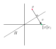
- Here $H$ is the hyperplane orthogonal to $v = \|x\|e_1 - x$,
and the key point is that $H$ passes through the origin $0$
Householder Reflectors
- $H$ passes through the origin because $x$ and $\|x\|e_1$
both belong to the hypersphere with radius $\|x\|_2$ centered at the origin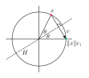
- Also analytically, since $(x + \|x\|e_1)/2\in H$,
we have $0\in H \Longleftrightarrow (\|x\|e_1 - x)\cdot (x + \|x\|e_1) = \|x\|^2 - x\cdot x= 0$
Householder Reflectors
- Next, we need to determine the matrix $F$ which maps $x$ to $\|x\|_2e_1$
- $F$ is closely related to the orthogonal projection of $x$ onto $H$,
since that projection takes us “half way” from $x$ to $\|x\|_2 e_1$ - Hence we first consider orthogonal projection onto $H$,
and subsequently derive $F$
Householder Reflectors
- The orthogonal projection of vector $a$ onto vector $b$ is given by \[ \frac{(a\cdot b)}{\|b\|^2}b \] since $\big(a - \frac{(a\cdot b)}{\|b\|^2}b\big)\cdot b=a\cdot b - \frac{(a\cdot b)}{\|b\|^2}b\cdot b=0$
- In the matrix form \[ \frac{(a\cdot b)}{\|b\|^2}b = \frac{1}{b^T b} (a^T b) b = \frac{1}{b^T b} b (b^T a) = \big(\frac{1}{b^T b} b b^T\big) a \]
- Therefore, the matrix $\frac{1}{b^T b} b b^T$ orthogonally projects onto $b$
Householder Reflectors
- We have that $\frac{1}{v^T v} v v^T$ orthogonally projects onto $v$
- Then, the following matrix
\[
P_H = \mathrm{I} - \frac{vv^T}{v^T v}
\]
orthogonally projects onto $H$ as it satisfies
- $P_H x \in H$
since $v^TP_H x = v^Tx - v^T\frac{vv^T}{v^T v}x = v^Tx - \frac{v^Tv}{v^T v}v^Tx = 0$ - $x - P_H x$ is orthogonal to $H$
since $x - P_H x = x - x + \frac{vv^T}{v^T v}x = \frac{v^Tx}{v^T v}v$ is proportional to $v$
- $P_H x \in H$
Householder Reflectors
- But recall that $F$ should reflect across $H$ rather than project onto $H$ \[ P_H = \mathrm{I} - \frac{vv^T}{v^T v} \]
- We obtain $F$ by going “twice as far” in the direction of $v$ compared to $P_H$ \[ F = \mathrm{I} - 2\frac{vv^T}{v^T v} \]
- Exercise: Show that $F$ is an orthogonal matrix, i.e. that $F^TF = \mathrm{I}$
Householder Reflectors
- In fact, there are two Householder reflectors that we can choose from
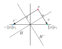
- Which one is better?
Householder Reflectors
- If $x$ and $\|x\|_2 e_1$ (or $x$ and $-\|x\|_2e_1$) are close,
we could obtain loss of precision due to cancellation
when computing $v = \|x\|e_1 - x$ (or $v = -\|x\|e_1 - x$) - To ensure $x$ and its reflection are well separated
we should choose the reflection to be \[ -\mathop{\mathrm{sign}}(x_1)\|x\|_2 e_1 \] - Therefore, we want to have $v = -\mathop{\mathrm{sign}}(x_1)\|x\|_2 e_1 - x$
- Since the sign of $v$ does not affect $F$, we scale $v$ by $-1$ to get \[ \htmlClass{color1}{ v = \mathop{\mathrm{sign}}(x_1)\|x\|_2 e_1 + x} \]
Householder Reflectors
- Let’s compare the two options for $v$ in the potentially
problematic case when $x \approx \|x\|_2 e_1$, i.e. when $x_1 \approx \|x\|_2$- $\htmlClass{color0}{ v_\text{bad} = \|x\|_2 e_1 - x}$
- $\htmlClass{color1}{ v_\text{good} = \mathop{\mathrm{sign}}(x_1)\|x\|_2 e_1 + x}$
- The corresponding norms are
\[ \htmlClass{color0}{ \|v_\text{bad}\|_2^2} = \big\|\|x\|_2 e_1 - x\big\|_2^2 \approx \htmlClass{color0}{ 0} \]
\[ \begin{aligned} \hspace{-0.5cm} \htmlClass{color1}{ \|v_\text{good}\|_2^2} &= \big\|\mathop{\mathrm{sign}}(x_1)\|x\|_2 e_1 + x\big\|_2^2 \\ &= (\mathop{\mathrm{sign}}(x_1)\|x\|_2 + x_1)^2 + \|x_{(2:m-k+1)}\|_2^2\\ &= (\mathop{\mathrm{sign}}(x_1)\|x\|_2 + \mathop{\mathrm{sign}}(x_1)|x_1|)^2 + \|x_{(2:m-k+1)}\|_2^2\\ &= (\|x\|_2 + |x_1|)^2 + \|x_{(2:m-k+1)}\|_2^2 \approx \htmlClass{color1}{ (2\|x\|_2)^2}\end{aligned} \]
Householder Reflectors
- Recall that $v$ is computed from two vectors of magnitude $\|x\|_2$
- The argument above shows that with $v_\text{bad}$ we can get $\|v\|_2 \ll \|x\|_2$
leading to loss of precision due to cancellation - In contrast, with $v_\text{good}$ we always have $\|v_\text{good}\|_2 \geq \|x\|_2$,
which rules out loss of precision due to cancellation
Householder Triangularization
- We can now write out the Householder algorithm
1:$\hspace{0em}$for $k=1:n$ do
2:$\hspace{1.2em}$$x = a_{(k:m,k)}$
3:$\hspace{1.2em}$$v_k = \mathop{\mathrm{sign}}(x_1)\|x\|_2 e_1 + x$
4:$\hspace{1.2em}$$v_k = v_k / \|v_k\|_2$
5:$\hspace{1.2em}$$a_{(k:m,k:n)} = a_{(k:m,k:n)} - 2v_k(v_k^T a_{(k:m,k:n)})$
6:$\hspace{0em}$end for - It overwrites $A$ with $R$ and stores $v_1,\ldots,v_n$
- Note that we do not divide by $v_k^T v_k$ in line 5
since we normalize $v_k$ in line 4 - Householder algorithm requires $\sim 2mn^2 - \frac{2}{3}n^3$ operations
(while Gram–Schmidt requires $2mn^2$)
Householder Triangularization
- Note that we do not explicitly form $Q$
- We can use the vectors $v_1,\ldots,v_n$ to compute $Q$ in a post-processing step
- Recall that \[ Q_k = \left[ \begin{array}{cc} \mathrm{I} & 0\\ 0 & F \end{array} \right] \] and $Q = (Q_n \cdots Q_2 Q_1)^T = Q_1^T Q_2^T \cdots Q_n^T$
- Also, the Householder reflectors are symmetric (see the definition of $F$),
so $Q = Q_1^T Q_2^T \cdots Q_n^T = Q_1 Q_2 \cdots Q_n$ and - Note that each $Q_k$ is involutory (i.e. $Q_k^{-1}=Q_k$)
but in general this does not hold for the product ($Q^{-1}\neq Q$)
Householder Triangularization
- For any $y$, we can evaluate $Qy = Q_1 Q_2 \cdots Q_n y$ using the $v_k$
1:$\hspace{0em}$for $k=n:-1:1$ do
2:$\hspace{1.2em}$$y_{(k:m)} = y_{(k:m)} - 2v_k(v_k^T y_{(k:m)})$
3:$\hspace{0em}$end for - Question: How can we use this to form the matrix $Q$?
Householder Triangularization
- Answer: Compute $Q$ from $Q e_i$, $i=1,\ldots,m$
since $Q$ consists of columns $Q e_i$ - Similarly, compute the reduced $\hat Q$ from $Q e_i$, $i=1,\ldots,n$
- However, often not necessary to form $Q$ or $\hat Q$ explicitly,
e.g. to solve the least-squares problem $Ax \simeq b$,
we only need the product $Q^T b$ and the matrix $R$ - Note that the product $Q^Tb = Q_n \cdots Q_2 Q_1 b$ can be evaluated as
1:$\hspace{0em}$for $k=1:n$ do
2:$\hspace{1.2em}$$b_{(k:m)} = b_{(k:m)} - 2v_k(v_k^T b_{(k:m)})$
3:$\hspace{0em}$end for
Givens Rotations
Givens Rotations
- Another method of QR-factorization is based on Givens rotation matrix
which is defined for $i<j$ and $\theta\in\mathbb{R}$ as an $m\times m$ matrix with elements \[ \begin{gathered} g_{ii}= c, \qquad g_{jj} = c, \qquad g_{ij}=-s, \qquad g_{ji}=s \\ g_{kk}= 1 \quad \text{for $k \ne i,j$,} \qquad g_{kl}=0 \quad \text{otherwise}\end{gathered} \] where $c=\cos \theta$ and $s=\sin \theta$
\[ G(i,j,\theta) = \left( \begin{array}{ccccccc} 1 & \ldots & 0 & \ldots & 0 & \ldots & 0 \\ \vdots & \ddots & \vdots & \ddots & \vdots & \ddots & \vdots \\ 0 & \ldots & c & \ldots & -s & \ldots & 0 \\ \vdots & \ddots & \vdots & \ddots & \vdots & \ddots & \vdots \\ 0 & \ldots & s & \ldots & c & \ldots & 0 \\ \vdots & \ddots & \vdots & \ddots & \vdots & \ddots & \vdots \\ 0 & \ldots & 0 & \ldots & 0 & \ldots & 1 \end{array} \right) \]
Givens Rotations
- A Givens rotation matrix applies a rotation
within the space spanned by the $i$-th and $j$-th coordinates - Named after James W. Givens, Jr. (1910–1993, USA)
Effect of a Givens rotation
- Consider a rectangular matrix $A\in\mathbb{R}^{m \times n}$ where $m\ge n$
- Suppose that $a_1$ and $a_2$ are in the $i$-th and $j$-th positions
in a particular column of $A$. Assume that $a_1^2+ a_2^2\neq 0$ - Restricting to just $i$-th and $j$-th dimensions,
a Givens rotation $G(i,j,\theta)$ for a particular angle $\theta$ can be chosen so that \[ \left( \begin{array}{cc} c & -s \\ s & c \end{array} \right) \left( \begin{array}{c} a_1 \\ a_2 \end{array} \right) = \left( \begin{array}{c} \alpha \\ 0 \end{array} \right) \] where $\alpha$ is non-zero, and the $j$-th component is eliminated
Stable computation
- Since the length is preserved, $\alpha=\sqrt{a_1^2+a_2^2}$
- We could compute \[ c=\frac{a_1}{\sqrt{a_1^2+a_2^2}}, \qquad s=\frac{-a_2}{\sqrt{a_1^2+a_2^2}} \] but this is susceptible to underflow/overflow if $\alpha$ is very small
- A better procedure is
- if $|a_1|>|a_2|$, set $\;t=\tan \theta = a_2/a_1\;$ and then $\;c=\frac{1}{\sqrt{1+t^2}}, s=-ct$
- if $|a_2|\ge |a_1|$, set $\;t=\cot \theta = a_1/a_2\;$ and then $\;s=\frac{-1}{\sqrt{1+t^2}}, c=-st$
Givens rotation algorithm
- The following algorithm performs the full QR-factorization
of a matrix $A\in\mathbb{R}^{m \times n}$ with $m\ge n$ using Givens rotations1:$\hspace{0em}$$R=A, Q=I$
2:$\hspace{0em}$for $k = 1:n$ do
3:$\hspace{1.2em}$for $j = m:k+1$ do
4:$\hspace{2.4em}$Construct $G=G(j-1,j,\theta)$ to eliminate $a_{jk}$
5:$\hspace{2.4em}$$R=G R$
6:$\hspace{2.4em}$$Q=Q G^T$
7:$\hspace{1.2em}$end for
8:$\hspace{0em}$end for
Advantages of Givens Rotations
- In general, for dense matrices, Givens rotations are not as efficient
as the other two approaches (Gram–Schmidt and Householder) - However, they are advantageous for sparse matrices,
since non-zero elements can be eliminated one-by-one
without affecting other rows
Advantages of Givens Rotations
- Also, Givens rotations of different rows can be done concurrently
- Consider the $6\times 6$ matrix
\[ \left[ \begin{array}{cccccc} * & * & * & * & * & * \\ 5 & * & * & * & * & * \\ \htmlClass{color5} 4 & \htmlClass{color5} 6 & \htmlClass{color5} * & \htmlClass{color5} * & \htmlClass{color5} * & \htmlClass{color5} * \\ \htmlClass{color5}{ \boxed{3}} & \htmlClass{color5} 5 & \htmlClass{color5} 7 & \htmlClass{color5} * & \htmlClass{color5} * & \htmlClass{color5} * \\ \htmlClass{color3} 2 & \htmlClass{color3}4 & \htmlClass{color3}6 & \htmlClass{color3}8 & \htmlClass{color3}* & \htmlClass{color3}* \\ \htmlClass{color3}1 & \htmlClass{color3}{ \boxed{3}} & \htmlClass{color3}5 & \htmlClass{color3}7 & \htmlClass{color3}9 & \htmlClass{color3}* \end{array} \right] \]
- Each number denotes the step when that element can be eliminated
- For example, on step 3, elements $(4,1)$ and $(6,2)$ can be
eliminated concurrently using $G(3,4,\cdot)$ and $G(5,6,\cdot)$
since they operate on different rows
Example: Sparsity Patterns
- Positions of non-zero elements of a sparse matrix form its sparsity pattern
- Transformations of the matrix may introduce new non-zero elements
- These new non-zero elements are called the fill-in
- See [examples/unit2/sparse_pattern.py]
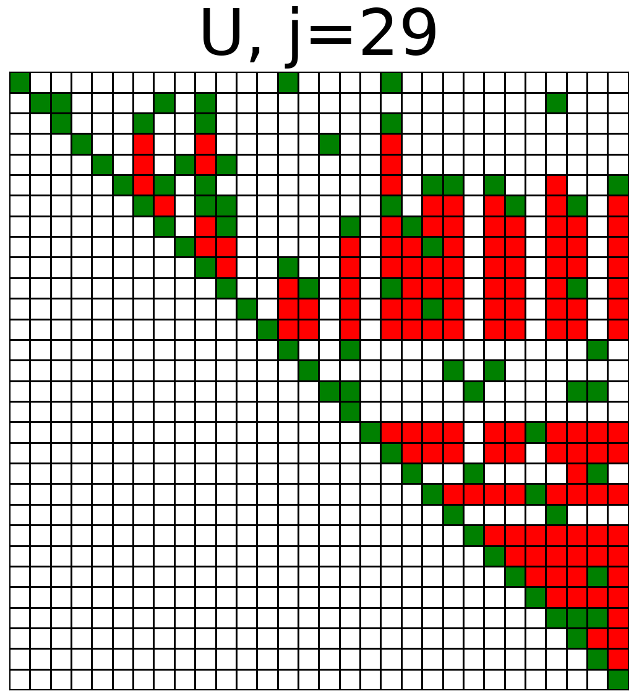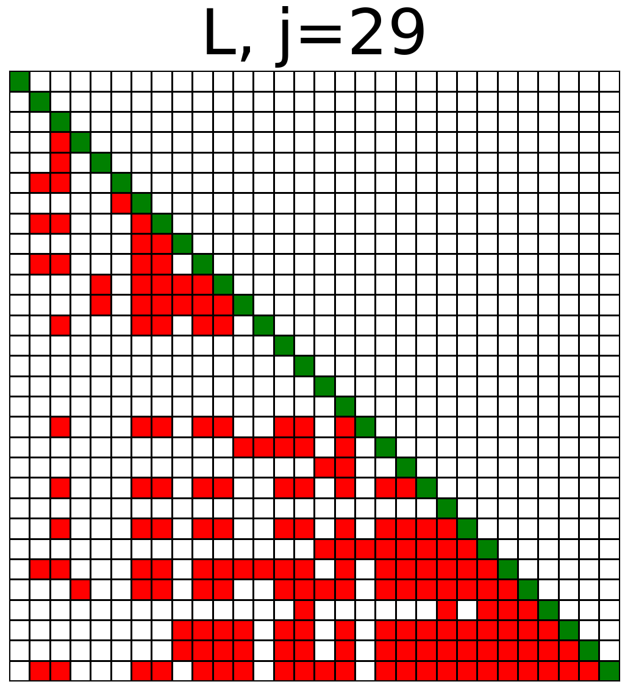
Singular Value Decomposition
Singular Value Decomposition
- How does a matrix deform the space?
- Example of $A=\left[ \begin{array}{cc} 1 & 1.5 \\ 0 & 1 \end{array} \right]$ mapping the unit circle to an ellipse
- In general, a matrix does not preserve orthogonality and length
Singular Value Decomposition
- However, orthogonal $v_1$ and $v_2$ can be chosen such that
$Av_1=\sigma_1u_1$ and $Av_2=\sigma_2u_2$ are orthogonalwhere $\sigma_1\geq\sigma_2\geq 0$ and $\|u_1\|=\|u_2\|=1$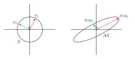
Singular Value Decomposition
- To obtain a Singular Value Decomposition (SVD) of a matrix $A \in \mathbb R^{m\times n}$,
we are looking for orthonormal vectors $v_i$ such that \[ Av_i = \sigma_i u_i, \quad i = 1,\ldots,n \] where vectors $u_i$ are also orthonormal and $\sigma_i\in\mathbb{R},\;\sigma_i\geq 0$ - In the matrix form, we get
\[
AV = \hat{U}\hat\Sigma
\]
\[ \left[ \begin{array}{c} \\ \\ ~~~~~~A~~~~~~~\\ \\ \\ \end{array} \right] \left[ \begin{array}{c|c|c} &&\\ &&\\ v_1 & \cdots & v_n\\ &&\\ &&\\ \end{array} \right] \begin{array}{c} \\ \\ =\\ \\ \\ \end{array} \left[ \begin{array}{c|c|c} &&\\ &&\\ u_1 & \cdots & u_n\\ &&\\ &&\\ \end{array} \right] \left[ \begin{array}{ccc} \sigma_1&&\\ &\ddots &\\ &&\sigma_n\\ \end{array} \right] \]
Singular Value Decomposition
- Matrices in $AV = \hat{U}\hat\Sigma$ are
- $A \in \mathbb R^{m\times n}$ is a general matrix
- $V \in \mathbb R^{n\times n}$ with orthonormal columns
- $\hat\Sigma \in \mathbb R^{n\times n}$ is diagonal with non-negative, real entries
- $\hat{U} \in \mathbb R^{m\times n}$ with orthonormal columns
- Therefore $V$ is an orthogonal matrix ($V^TV = V V^T = {\rm I}$) and
we have the following decomposition called the reduced SVD \[ A = \hat{U}\hat\Sigma V^T \]- $\sigma_1, \sigma_2,\ldots,\sigma_n \geq 0$ are singular values (typically $\sigma_1 \geq \sigma_2 \geq \ldots$)
- $u_1,u_2,\ldots,u_n$ are left singular vectors (columns of $\hat U$)
- $v_1,v_2,\ldots,v_n$ are right singular vectors (rows of $V^T$)
Singular Value Decomposition
- Just as with QR factorization, we can pad the columns of $\hat{U}$
with $m-n$ arbitrary orthonormal vectors
to obtain an orthogonal $U \in \mathbb R^{m\times m}$ - We then need to “silence” these arbitrary columns
by adding rows of zeros to $\hat\Sigma\in\mathbb{R}^{n\times n}$ to obtain $\Sigma\in\mathbb{R}^{m\times n}$ - This gives the full SVD for $A \in \mathbb R^{m\times n}$ \[ A = U \Sigma V^T \]
Full vs Reduced SVD
Singular Value Decomposition
- Theorem: Every matrix $A \in \mathbb R^{m\times n}$ has
a full singular value decomposition. Furthermore:- singular values $\sigma_i$ are uniquely determined
- if $A$ is square and $\sigma_j$ are distinct,
then $u_i$ and $v_i$ are uniquely determined up to sign
- Proof is outside of the scope of the course
Singular Value Decomposition
- This theorem justifies the statement:
the image of the unit hypersphere under any $m \times n$ matrix is a hyperellipse - Consider $A = U \Sigma V^T$ (full SVD) applied to the unit sphere $S\subset\mathbb R^n$:
- the orthogonal map $V^T$ preserves $S$
- $\Sigma$ stretches $S$ into a hyperellipse aligned with the canonical axes $e_j$
- $U$ rotates or reflects the hyperellipse without changing its shape
SVD in Python
numpy.linalg.svd()computes
the full SVD by default
>>> import numpy as np
>>> np.random.seed(2022)
>>> a=np.random.random((4,2))
>>> a
array([[0.00935861, 0.49905781],
[0.11338369, 0.04997402],
[0.68540759, 0.48698807],
[0.89765723, 0.64745207]])
>>> (u, s, v) = np.linalg.svd(a)
>>> u
array([[-0.22570503, 0.97206861, -0.02953283, -0.0571636 ],
[-0.08357767, -0.08399541, -0.61111959, -0.78261893],
[-0.58696968, -0.14202585, 0.66414863, -0.44068338],
[-0.77300621, -0.16690133, -0.42961291, 0.43593358]])
>>> s
array([1.42929716, 0.39183261])
>>> v
array([[-0.77506396, -0.63188279],
[-0.63188279, 0.77506396]])- with
full_matrices=0
it computes the reduced SVD
>>> import numpy as np
>>> np.random.seed(2022)
>>> a = np.random.random((4,2))
>>> a
array([[0.00935861, 0.49905781],
[0.11338369, 0.04997402],
[0.68540759, 0.48698807],
[0.89765723, 0.64745207]])
>>> (u, s, v) = np.linalg.svd(a, full_matrices=0)
>>> u
array([[-0.22570503, 0.97206861],
[-0.08357767, -0.08399541],
[-0.58696968, -0.14202585],
[-0.77300621, -0.16690133]])
>>> s
array([1.42929716, 0.39183261])
>>> v
array([[-0.77506396, -0.63188279],
[-0.63188279, 0.77506396]])Matrix Properties via the SVD
- Let $r$ denote the number of nonzero singular values, so that \[ \sigma_1\geq\sigma_2>\dots\geq\sigma_r>0,\quad \sigma_{r+1}=\ldots=\sigma_{n}=0 \]
- Property: $r=\mathop{\mathrm{rank}}(A)$
- Proof: In the full SVD $A = U\Sigma V^T$, matrices $U$ and $V^T$ have full rank,
so multiplication by them preserves rank, leading to $\mathop{\mathrm{rank}}(A) = \mathop{\mathrm{rank}}(\Sigma)=r$ - Property: $\mathop{\mathrm{image}}(A) = \mathop{\mathrm{span}}\{u_1,\ldots,u_r\}$ and $\mathop{\mathrm{null}}(A) = \mathop{\mathrm{span}}\{v_{r+1},\ldots,v_n\}$
- Proof: This follows from $A = U\Sigma V^T$ and \[ \begin{aligned} {\mathop{\mathrm{image}}}(\Sigma) &= \mathop{\mathrm{span}}\{e_1,\ldots,e_r\} \in \mathbb R^m\\ {\mathop{\mathrm{null}}}(\Sigma) &= \mathop{\mathrm{span}}\{e_{r+1},\ldots,e_n\} \in \mathbb R^n \end{aligned} \]
Matrix Properties via the SVD
- Property: $\|A\|_2 = \sigma_1$
- Proof: By definition $\|A\|_2=\max_{\|v\|_2=1} \|Av\|_2=\max_{\|v\|_2=1} \|U\Sigma V^T v\|_2$.
Orthogonal matrices preserve the norm, $\|A\|_2 = \max_{\|v\|_2=1} \|\Sigma v\|_2=\sigma_1$ - Property: Singular values of $A$ are the square roots
of the eigenvalues of $A^TA$ or $AA^T$ - Proof: $A^TA = (U\Sigma V^T)^T(U\Sigma V^T) = V\Sigma U^T U \Sigma V^T = V (\Sigma^T \Sigma) V^T$
Therefore, $(A^TA)V = V (\Sigma^T \Sigma)$, or $(A^TA)v_{(:,j)} = \sigma_j^2 v_{(:,j)}$
(Analogous for $AA^T$)
Matrix Properties via the SVD
- The pseudoinverse $A^+$ can be defined more generally in terms of the SVD
- Define pseudoinverse of a scalar $\sigma\in\mathbb{R}$ to be
$\sigma^+ = 1/\sigma$ if $\sigma \neq 0\quad\text{and}\quad\sigma^+=0$ if $\sigma=0$ - Define pseudoinverse $\Sigma^+\in\mathbb R^{n\times m}$ of a diagonal matrix $\Sigma\in\mathbb R^{m\times n}$
as its transpose after taking scalar pseudoinverse of each element - Define pseudoinverse of $A \in \mathbb R^{m\times n}$ as \[ A^+ = V \Sigma^+ U^T \]
- Note: $A^+$ exists for any matrix $A$, and it covers
our previous definitions of pseudoinverse
Matrix Properties via the SVD
- We generalize the condition number to rectangular matrices
via the definition \[ \kappa(A) = \|A\|\|A^+\| \] - Property: The 2-norm condition number is given by \[ \kappa(A) = \sigma_{\max} / \sigma_{\min} \]
- Proof: $\|A\|_2 = \sigma_{\max}$ as shown before.
The largest singular value of $A^+$ is $1/\sigma_{\min}$ so $\|A^+\|_2 = 1/\sigma_{\min}$
Matrix Properties via the SVD
- These results indicate the importance of the SVD,
both theoretical and as a computational tool - Algorithms for calculating the SVD are outside scope of this course
- SVD requires $\sim 4mn^2 - \frac{4}{3}n^3$ operations
- For more details on algorithms, see Trefethen & Bau, or Golub & van Loan
Low-Rank Approximation via the SVD
- One of the most useful properties of the SVD is that it allows us
to obtain an optimal low-rank approximation to $A$ - We can recast SVD as \[ A = \sum_{j=1}^r \sigma_j u_j v_j^T \]
- Follows from writing $\Sigma$ as a sum of $r$ matrices $\Sigma_j$,
where $\Sigma_j = \mathop{\mathrm{diag}}(0,\ldots,0,\sigma_j,0,\ldots,0)$ - Each $u_j v_j^T$ is a rank one matrix: each column is a scaled version of $u_j$
Low-Rank Approximation via the SVD
- Theorem: For any index $\nu=0,\ldots, r$ the matrix \[ A_\nu = \sum_{j=1}^\nu \sigma_j u_j v_j^T \] satisfies \[ \|A - A_\nu\|_2 = \inf_{B \in \mathbb R^{m\times n},~\mathop{\mathrm{rank}}(B)\leq \nu} \|A - B\|_2 = \sigma_{\nu+1} \]
- That is
- $A_\nu$ is the closest rank $\nu$ matrix to $A$, measured in the 2-norm
- The error in $A_\nu$ is given by the first omitted singular value
Low-Rank Approximation via the SVD
- A similar result holds in the Frobenius norm: \[ \|A - A_\nu\|_F = \inf_{B \in \mathbb R^{m\times n},~\mathop{\mathrm{rank}}(B)\leq \nu} \|A - B\|_F = \sqrt{\sigma_{\nu+1}^2 + \cdots + \sigma_{r}^2} \]
Low-Rank Approximation via the SVD
- These theorems indicate that the SVD is an effective way
to compress data encapsulated by a matrix! - For example, $A$ can represent an image
- If singular values of $A$ decay rapidly,
we can approximate $A$ with few rank one matrices - For each rank one matrix $\sigma_j u_j v_j$,
we only need to store $m+n+1$ numbers: $\sigma_j,\; u_j,\; v_j$
Principal Component Analysis
Principal Component Analysis
- Consider a dataset of $(x_i,y_i)\in\mathbb{R}^2$ for $i=1,\ldots,m$

- There is a strong correlation between $x$ and $y$
- This means that we can describe most of the data with just one feature
- This is done by Principal Component Analysis (PCA)

Principal Component Analysis
- The new axis should maximize variance of the data
- Consider the empirical covariance matrix \[ M=\left[ \begin{array}{cc} \mathrm{Var}(x) & \mathrm{Cov}(x, y) \\ \mathrm{Cov}(x, y) & \mathrm{Var}(y) \end{array} \right] \]
- In terms of the samples $(x_i,y_i)$ \[ M=\frac{1}{m} \left[ \begin{array}{cc} \sum_{i=1}^m (x_i - \bar x)^2 & \sum_{i=1}^m (x_i - \bar x) (y_i - \bar y) \\ \sum_{i=1}^m (x_i - \bar x) (y_i - \bar y) & \sum_{i=1}^m (y_i - \bar y)^2 \end{array} \right] \] where $\bar x= \sum_{i=1}^m x_i$ and $\bar y= \sum_{i=1}^m y_i$ are the empirical means
Principal Component Analysis
- $M$ is a symmetric positive-definite matrix
- Variance in the direction $v\in\mathbb{R}^2$ is given by $v^T M v$
- $v^T M v$ is maximized if $v$ is the eigenvector of $M$
corresponding to the largest eigenvalue - Define a matrix $A\in\mathbb{R}^{m\times2}$ \[ A = \left[ \begin{array}{cc} x_1 - \bar{x} & y_1 - \bar{y}\\ x_2 - \bar{x} & y_2 - \bar{y}\\ \vdots & \vdots \\ x_m - \bar{x} & y_m - \bar{y}\\ \end{array} \right] \]
- Then $M=\frac{1}{m}A^T A$
Principal Component Analysis
- From the full SVD $A=U\Sigma V^T$,
the columns of $V$ are the eigenvectors of $M=\frac{1}{m}A^TA$ - Define the new axes along $v_1$ and $v_2$
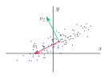
- See [examples/unit2/pca.py]
Example: Video Reconstruction
- Three videos
- PCA applied to frames of the videos